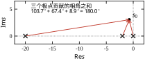
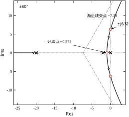
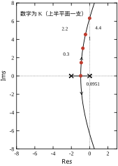
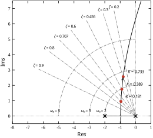
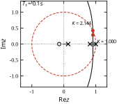
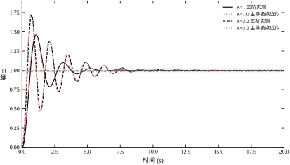
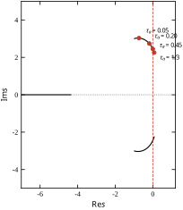
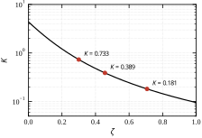
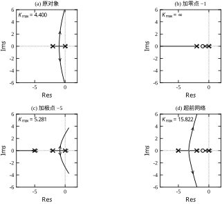
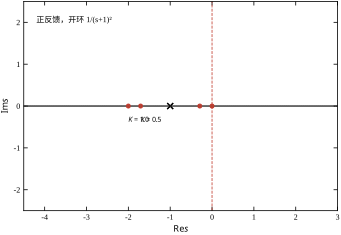

第 39 章把稳定性判据讲成了三张图：Nyquist 数圈、Bode 读裕度、根轨迹看走向。三张图里只有根轨迹是“以增益为横轴”的——它不回答“当前这点稳不稳”，而回答“增益一动，极点往哪儿跑”。这一章把这条线索单独展开：怎么画、怎么读、怎么用它改。
调试台上最常见的一句话是“再往上加一点看看”。加多少？加到什么程度会振？振起来以后是慢慢发散还是一下子飞掉？这三个问题，Bode 图能答，但要来回换算；根轨迹把答案画成一条线，一眼就能看到。
以本章从头用到尾的对象为例：L(s)=10K/[s(s+2)(0.05s+1)]，三个开环极点分别在 0、-2、-20。K 从 0 开始增大，三个闭环极点各自移动，画出的三条曲线就是根轨迹。曲线的形状只由开环零极点决定，与 K 无关；K 只决定“走到曲线的哪一点”。这个分工是整章的地基：零极点定形状，增益定位置。
第 37 章说过，闭环极点决定响应的形状：实极点给单调衰减，共轭对给振荡，实部决定衰减快慢，虚部决定振荡频率。第 38、39 章则给出了“当前 K 下极点在哪”的判据。根轨迹补的是第三件事——极点随参数的走向。
走向比位置更有用，原因有三。第一，位置是一个点，走向是一条线，线能告诉你“前面还有多远才到虚轴”，这就是增益裕度的几何版本。第二，走向能告诉你“哪个方向是安全的”：如果曲线一开始就往右走，那么任何增益增加都在恶化稳定，只能靠改结构。第三，走向能指导改结构：加一个零点，曲线整体向左弯；加一个极点，曲线向右压。改结构之前先看图，比改完再试要省事得多。
根轨迹在工程上有三项任务，难度递增。
第一项是判稳：曲线有没有穿过虚轴？穿过时的 K 是多少？对本章对象，答案是 K_{\max}=4.40，穿越频率 6.3246 rad/s。这两个数与第 39 章用 Bode 和 Nyquist 算出来的完全一致，因为三者解的是同一个特征方程。
第二项是定量：给定 K，读极点，算阻尼比、自然频率，再换算超调与调节时间。K=1 时主导极点是 -0.737\pm\mathrm{j}3.033，\zeta=0.236，实测超调 46.05\%、调节时间 5.36 s。这一步把“图上的一点”翻译成“验收表上的一行”。
第三项是整形：如果现有轨迹怎么调都达不到指标，就加零点或极点把轨迹拉过去。加一个 s=-1 的零点，本章对象的 K_{\max} 从 4.40 变成无穷；加一个 s=-5 的极点，K_{\max} 掉到 5.28 且多出一个分离点。整形的本质是“改形状”，而形状只由零极点决定——这句话在整章会反复出现。
同一张 s 平面图，第 39 章用它“判”，本章用它“改”。分工可以写成一句话：第 39 章问“现在稳不稳”，本章问“怎么让它更稳、更快、更准”。
具体差别在三处。其一，第 39 章的根轨迹只是三个判据之一，用来交叉核对；本章把它当成主工具，Bode 与 Nyquist 退为校验。其二，第 39 章只用 K 作参数；本章还要用 \tau_a、用零点位置、用采样周期作参数，这就是参数根轨迹。其三，第 39 章关心“临界”，本章关心“指标”——临界只是一个点，指标是一段区间。
两章共用的数必须对得上。本章的 K_{\max}=4.4000、\omega_{\mathrm{osc}}=6.3246、分离点 -0.9737 与对应 K=0.0951，全部由 code\ch040_sim.py 重算，与第 39 章逐位一致。同一对象在不同章节给出不同的数，是写作事故，不是精度问题，所以每次都要跑一遍而不是抄一遍。
拿到一张根轨迹，先问三个问题，顺序不能乱。
第一问：起点在哪？起点是 K=0 时的闭环极点，也就是开环极点。本章对象是 0、-2、-20，所以三条支路分别从这三点出发。
第二问：终点在哪？终点是 K\to\infty 时的位置：m 条支路终止于开环零点，其余 n-m 条沿渐近线奔向无穷远。本章对象没有零点，所以三条都奔向无穷——两条沿 \pm60^{\circ}，一条沿 180^{\circ}。
第三问：往哪拐？拐点就是分离点、会合点、虚轴穿越点。本章对象在 -0.974 处分离（K=0.0951），在 \pm\mathrm{j}6.32 处穿越虚轴（K=4.40）。这两个位置把整条轨迹分成三段：分离前是三个实极点，分离后是一对共轭加一个实极点，穿越后共轭对进入右半平面。
三问答完，图就读完了。其余的细节（出射角、渐近线角度）都是补充，不影响主要结论。
有人会说：不就是调一个增益吗，现场拧一拧、看波形，总能找到合适的值。对二阶、单回路、无延迟的系统，这话基本成立。但只要出现下面三种情况之一，试凑就会失效。
第一种，不知道天花板在哪。 试凑只能告诉你“现在这个值会振”，不能告诉你“再往下还有多少空间”。本章对象的名义临界增益是 4.4000，而“好用的上限”大约只有 0.39（M_p=19.90\%）——两者差了 11 倍。若靠试凑，很可能在 0.4 附近就以为“快到头了”，实际上再往上还能走，只是超调不再可接受。反过来，若对象本身只有一个很窄的可用区间，试凑会在区间里反复横跳，永远说不清边界在哪。
第二种，增益不是唯一的旋钮。 天花板不只由对象决定，还由采样周期与延迟决定。同一个对象，连续域是 4.4000，T_s=0.1 s 离散后是 2.1437，再加一拍延迟是 1.0785。换一块控制器、加一段总线，天花板就变了，而试凑给出的“经验值”是绑在旧硬件上的，换硬件就得重来。
第三种，“形状”问题试凑不出来。 当上升时间与超调被同一条轨迹绑死时，再怎么调 K 都是在一条曲线上滑动，两个指标此消彼长。本章 §40.9.8 的例子很典型：原轨迹上 M_p=20\% 时 t_s=4.30 s，怎么调都降不到 3 s；加一只超前网络后，M_p=7.22\% 时 t_s=2.71 s。这不是“没调好”，是“结构不够”。 试凑永远不会告诉你“该加一个零点”。
根轨迹法要解决的正是这三件事：给天花板（K_{\max}）、给天花板的两个修正项（采样与延迟）、给形状的自由度（零极点）。它不保证一定有好答案，但它能让你在动手之前就知道有没有答案、答案在哪个方向。
闭环特征方程是
1+K\,G_0(s)=0 \tag{40-1}
其中 G_0(s) 是“单位增益”的开环传递函数，K 单独提出来当参数。把 G_0 写成零极点形式 G_0(s)=K_g\prod(s-z_i)/\prod(s-p_j)，式 (40-1) 就变成
\prod_{j=1}^{n}(s-p_j)+K K_g\prod_{i=1}^{m}(s-z_i)=0 \tag{40-2}
这是一个关于 s 的复系数（实际是实系数）多项式方程。根轨迹就是“K 从 0 到 \infty 时，这个方程的根在复平面上的轨迹”。因为系数是实数，根必然共轭成对出现，所以轨迹关于实轴对称——这是画图时最省事的一条性质。
式 (40-1) 是一个复数等式，可以拆成模与角两个条件。角条件先看：
\sum_{i=1}^{m}\angle(s-z_i)-\sum_{j=1}^{n}\angle(s-p_j)=(2k+1)180^{\circ} \tag{40-3}
这个条件里没有 K。这就是“形状与增益无关”的数学根源：一个点是否在轨迹上，只看它到各零极点的连线角度，与增益大小无关。K 只出现在模条件里，决定“走到这个点时 K 等于多少”。
图 40-1 把这件事画成了几何：取 K=1 时的闭环极点 s_0=-0.737+\mathrm{j}3.033，从三个开环极点各引一条向量到 s_0，三者的相角分别是 103.7^{\circ}、67.4^{\circ}、9.0^{\circ}，和为 180.1^{\circ}——正好满足式 (40-3)（舍入误差 0.1^{\circ} 来自极点只保留三位小数）。

读这张图有一个容易忽略的细节：相角是带符号的。极点在分母，贡献负角；零点在分子，贡献正角。式 (40-3) 写成“零点和减极点和”，等价于“极点贡献负角”的写法。手算时若把符号写反，整条轨迹会关于实轴翻到另一侧，而且看上去“也挺像”——这是手绘根轨迹最常见的错误。
回到式 (40-1) 的模：
K=\frac{\prod_{j=1}^{n}\left|s-p_j\right|} {K_g\prod_{i=1}^{m}\left|s-z_i\right|} \tag{40-4}
本对象写成首一形式更方便：G_0(s)=200/[s(s+2)(s+20)]，所以 K_g=200，代入式 (40-4) 得
K=\frac{\left|s\right|\left|s+2\right|\left|s+20\right|}{200} \tag{40-5}
用 K=1 的极点验一下：\left|s_0\right|=3.121，\left|s_0+2\right|=3.281，\left|s_0+20\right|=20.238，三者之积 207.3，除以 200 得 1.037，与 K=1 差 3.7\%。这个差不是公式错，而是 s_0 只保留了三位小数：把极点取到六位再算，结果会收敛到 1.0000。模值条件是精确的，误差全在读数上。
工程上这条式子的用处是“沿轨迹标 K”：先按相角条件画出形状，再在每个点上用式 (40-5) 算 K，把 K 标在曲线旁边，图就完整了。图 40-3 就是这么标的。
特征方程是 n 次多项式（n 为开环极点数），所以有 n 个根，n 条支路。这条结论看似平凡，却解释了一个常见疑问：为什么加一个极点会“多出一条支路”？因为多项式次数加一，根就多一个，多出来的那条支路必须从新极点出发、沿某条渐近线奔向无穷。
对称性来自实系数：若 s 是根，则 \bar{s} 也是根。所以轨迹要么落在实轴上，要么成对出现在上下半平面。画图时只需算上半平面，下半平面镜像即可——图 40-2 到图 40-6 都用了这条省事的做法。
K\to\infty 时的行为由分子分母的次数差决定。n-m 条支路趋向无穷，方向由渐近线给出：
\sigma_a=\frac{\sum p_j-\sum z_i}{n-m}, \qquad \theta_k=\frac{(2k+1)180^{\circ}}{n-m} \tag{40-6}
本对象 n=3、m=0，故 \sigma_a=(0-2-20)/3=-7.333，三条渐近线角度为 60^{\circ}、-60^{\circ}、180^{\circ}。这三个数与实跑输出完全一致，也是图 40-2 里那三条虚线的来历。
有人会问：既然 Routh 表能判稳，为什么还要画轨迹？答案是两者回答的问题不同，但在“临界”这一点上必须一致。
Routh 判据给的是“给定 K，特征多项式有没有右半平面根”，输出是一个是非；把 K 当符号，还能解出临界 K 的表达式。根轨迹给的是“K 变化时根怎么走”，输出是一条曲线。在临界点上，两者必然重合：Routh 的临界 K 就是轨迹穿虚轴时的 K，临界振荡频率就是穿越点的虚部。
对本章对象，第 38 章的 Routh 计算给出 K_{\max}=4.40、\omega_{\mathrm{osc}}=6.3246；本章的数值轨迹给出 4.4000 与 6.3246。两条完全不同的路径（符号消元 vs 多项式求根扫描）给出同一个数，这才叫验证。只跑一条路径得到的数，只能叫“算出来了”，不能叫“对了”。
式 (40-3) 与式 (40-4) 只有一行，用错的地方却集中在三处。这三处都不是数学难点，而是“适用范围”被忽略。
第一，相角条件只管“在不在”，不管“稳不稳”。 满足相角条件的点，只说明“存在某个 K>0 使闭环极点落在这里”，不说明这个点好不好、更不说明系统稳定。轨迹可以整条躺在右半平面，上面每一点都满足相角条件。判稳要另看位置，判好坏要另算指标，三件事不能混。
第二，180^{\circ} 只对“负反馈 + K>0”成立。 特征方程写成 1+KG=0 时，KG=-1，相角是 \pm180^{\circ}。若 K<0，-1 变成 +1，条件改为 0^{\circ}；若是正反馈，特征方程本来就是 1-KG=0，条件同样是 0^{\circ}。这就是 §40.11.3 的零度根轨迹。换了反馈极性却仍按 180^{\circ} 画，图会整体错位——不是细节错，是形状错。
第三，手算角度必须用 atan2，不能只用 arctan。 \arctan 的值域是 (-90^{\circ},90^{\circ})，它分不清第二、第三象限。向量 s-p_j 落在左半平面时，真实角度可能是 180^{\circ} 附近的负角，用 \arctan 会得到相反符号的小角，总和差出 360^{\circ} 的整数倍。编程时用 np.angle，手算时先画箭头再定象限，这是唯一可靠的做法。
下面用两个点验证这三条。
先看分离点 s=-0.9737。三个极点向量分别是：从 0 指向该点，方向沿负实轴，角度 180^{\circ}；从 -2 指向该点，方向沿正实轴，角度 0^{\circ}；从 -20 指向该点，同样是 0^{\circ}。总和 180^{\circ}，满足条件，所以它确实在轨迹上。
再看 s=-1+\mathrm{j}2。三个角度是
\angle(-1+\mathrm{j}2)=116.565^{\circ},\quad \angle(1+\mathrm{j}2)=63.435^{\circ},\quad \angle(19+\mathrm{j}2)=6.009^{\circ}
总和 186.009^{\circ}，比 180^{\circ} 多出 6.0^{\circ}。这一点不在轨迹上。 多出的角为正，说明该点“偏高”——上半平面的支路从它下方经过。这个判断不需要画图，也不需要求根，三次反三角函数就能得出，是手绘时最常用的自检手段。
根轨迹是一条会动的曲线，但曲线上有三个量始终不动。它们不是近似的经验，而是韦达定理的直接推论，任何一条算错的轨迹都会被它们当场抓住。
把特征方程写成首一形式。本章对象是
s^3+22s^2+40s+200K=0
三个根 s_1,s_2,s_3 与系数的关系是
s_1+s_2+s_3=-22,\qquad s_1s_2+s_2s_3+s_3s_1=40,\qquad s_1s_2s_3=-200K
第一条最有用：三个根之和恒等于 -22，与 K 无关。 这意味着轨迹不是三条各自独立的曲线，它们被一根无形的绳子拴着——一个根往右走，另外两个的实部之和就必须往左补。
用表 40-3 的数据核对。K=0.2436 时主导对是 -0.9333\pm\mathrm{j}1.2445，第三极是 -20.1334，三者实部相加 -0.9333-0.9333-20.1334=-22.000。K=0.3888 时是 -0.8944-0.8944-20.2113=-22.000。每一档都能对上，说明数值解没有跑偏。
第二条给出一个反直觉的结论：加零点不改变根之和，加极点才改变。 加零点 -1 后特征方程是 s^3+22s^2+(40+200K)s+200K=0，二次项系数仍是 22，所以根之和仍是 -22；加极点 -5 后特征方程多一个 (s+5) 因子，二次项系数变成 27，根之和变成 -27。这正好解释了 §40.9.7 里“加极点后渐近线交点从 -7.33 移到 -6.75”——交点是根之和除以 n，分子分母同时变了。
第三条最有工程价值。第三极在整个设计区间里都非常稳定：K=0.1446 时 -20.0797，K=0.3888 时 -20.2113，K=0.7332 时 -20.3910。它几乎钉在 -20 附近不动。把 s_3\approx-20.2 代进第三条：
|s_1s_2|\approx\frac{200K}{20.2}\approx9.9K
而 s_1,s_2 是一对共轭根，|s_1s_2|=|s_1|^2=\omega_n^2。于是
\omega_n\approx\sqrt{10K}
这是一个只用乘法就能核对的近似。K=0.2436 时 \sqrt{2.436}=1.5608，实测 \omega_n=1.5556，差 0.3\%；K=0.3888 时 \sqrt{3.888}=1.9718，实测 1.9615，差 0.5\%。在这个对象上，自然频率几乎完全由增益决定，与零极点的细微位置无关。
这条近似把“两个指标被绑死”从一句感慨变成了公式：想要更快的响应，就要更大的 \omega_n，就要更大的 K；而 \zeta=-\sigma/\omega_n，\sigma 随 K 增大而减小，\omega_n 随 K 增大而增大，两者相除，\zeta 必然单调下降。换句话说，在 n-m=3 且第三极远置的对象上，“又快又稳”在单增益下无解，这不是调参水平问题，是代数结构决定的。
三条不变量还有一个实用价值：它们让手算与程序可以互相验算。程序给出根之后，先把三个实部加起来看是不是 -22，再把三个根乘起来看是不是 -200K。两条都对，才说明求根没有数值问题；有一条不对，多半是多项式系数写错了（例如把 0.05s+1 展开成 0.05s+0.05）。这一步只需两行代码，却能挡掉大部分低级错误。
手绘根轨迹有一套成熟的规则，八条足够应付绝大多数对象。表 40-1 是总表，后面六小节逐条解释。
表 40-1 根轨迹的八条绘图规则
| 序号 | 规则 | 依据 |
|---|---|---|
| 1 | 起点为开环极点，n 条支路 | K=0 时式 (40-2) 退化为 \prod(s-p_j)=0 |
| 2 | 终点为开环零点或无穷远 | K\to\infty 时由分子决定 |
| 3 | 关于实轴对称 | 特征多项式为实系数 |
| 4 | 实轴上的段：右侧零极点总数为奇数 | 相角条件在实轴上的特例 |
| 5 | n-m 条渐近线，交于 \sigma_a | 式 (40-6) |
| 6 | 分离／会合点满足 \mathrm{d}K/\mathrm{d}s=0 | 重根条件 |
| 7 | 虚轴穿越点由 s=\mathrm{j}\omega 代入求得 | 临界稳定 |
| 8 | 复极点出射角由相角条件补足 | 式 (40-3) 在出射点的特例 |
前三条规则是“骨架”，一句话就能记住：从极点出发，到零点结束，走不到零点的奔向无穷。
“从极点出发”的证明只需令 K=0：式 (40-2) 变成 \prod(s-p_j)=0，根就是 p_j。“到零点结束”令 K\to\infty：两边除以 K，主项变成 K_g\prod(s-z_i)=0，根趋于 z_i。若零点数少于极点数，多出的 n-m 个根必须跑到无穷远，因为多项式次数差没有别的去处。
对称性不是“近似成立”，而是严格成立：实系数多项式的复根必成共轭对。这一条在数值计算里也有用——若算出的根不共轭，说明数值精度出了问题，而不是对象有什么特殊性质。本章代码在求根后不做任何对称化处理，输出的虚部天然成对，正是这个道理。
实轴规则是八条里最容易被记错的一条：某段实轴属于轨迹，当且仅当它右侧的实数零极点总数为奇数。
用本章对象验：极点在 0、-2、-20。区间 (-2,0) 右侧有一个极点（0），奇数，属于轨迹；区间 (-20,-2) 右侧有三个（0、-2 与区间内的？注意“右侧”指该段右侧的全部零极点），实际是 0 与 -2 两个，再加 -20 本身在左端不算，所以是 2 个，偶数，不属于；区间 (-\infty,-20) 右侧有 3 个，奇数，属于。
所以轨迹只占 (-2,0) 与 (-20,-\infty) 两段。这与图 40-2 一致：0 与 -2 之间的两个极点相向而行，在 -0.974 相遇后离开实轴；而 -20 那条支路沿实轴一直向左，直到 -22 附近才与另一条从上方下来的支路在无穷远处汇合（实际上它沿 180^{\circ} 渐近线直接走向 -\infty）。
实轴规则为什么是“奇数”？因为实轴上每对共轭零点或极点对该点的相角贡献相互抵消（一上一下，角度互为相反数），只有实数零极点有净贡献。右侧每有一个实数零极点，角度贡献 180^{\circ}；要凑成 180^{\circ} 的奇数倍，右侧的个数必须是奇数。
渐近线由式 (40-6) 给出。本章对象 \sigma_a=-7.333，角度 \pm60^{\circ} 与 180^{\circ}，三条射线从 -7.333 出发。
一个常见的误读是“渐近线交点在轨迹上”。不在。\sigma_a 只是三条射线的公共起点，轨迹本身并不经过它——180^{\circ} 那条射线沿实轴向左，\pm60^{\circ} 两条向斜上方与斜下方，三者在 \sigma_a 处相交但轨迹在那里没有根。想验证也简单：把 s=-7.333 代入式 (40-5)，得 K=7.333\times5.333\times12.667/200=2.48，说明这一点确实“有对应的 K”，但它不满足相角条件，所以不是闭环极点。模值条件对平面上任意一点都能算出一个 K，只有同时满足相角条件的点才是根——这句话解释了为什么不能只用模值条件画图。
分离点是两条支路在实轴上相遇后离开实轴的位置。数学上它是特征方程的重根，因此满足
\frac{\mathrm{d}K}{\mathrm{d}s}=0 \quad\Longleftrightarrow\quad N(s)D'(s)-N'(s)D(s)=0 \tag{40-7}
其中 D、N 分别是 G_0 的分母与分子多项式。对本章对象，N=200（常数），D=s(s+2)(s+20)=s^3+22s^2+40s，于是
D'(s)=3s^2+44s+40=0 \tag{40-8}
解出 s=-0.9737 与 s=-13.67。前者对应 K=0.0951（代入式 40-5：0.974\times1.026\times19.03/200=0.0951），是真实分离点；后者对应 K=-0.668，负增益，不在 K>0 的轨迹上。
判别哪个根有效的方法就是算 K：只有 K>0 的才是根轨迹上的点。很多教材只给“分离点满足 \mathrm{d}K/\mathrm{d}s=0”，不强调这一句，学生就会把 -13.67 也画上去。
分离点的物理含义是“临界阻尼”：K<0.0951 时两个实极点分开，系统过阻尼、无超调；K=0.0951 时两极点重合，临界阻尼；K>0.0951 时变成共轭对，开始有超调。实跑数据支撑这一点：K=0.0951 时超调为 -0.00\%（数值零），配对极点 -0.974\pm0.019\mathrm{j}——虚部只剩 0.019，正是“刚好要分叉”的状态。
穿越点由 1+KG_0(\mathrm{j}\omega)=0 给出，等价于“相角 -180^{\circ} 且模值为 1”。两条路可以走：一条是 Routh 表令某行全零，一条是直接把 s=\mathrm{j}\omega 代入、分开实虚部。
代入前必须先做一件事：把分母首一化。G_0(s)=10/[s(s+2)(0.05s+1)]=200/[s(s+2)(s+20)]，分母是 D(s)=s^3+22s^2+40s。令 s=\mathrm{j}\omega：
D(\mathrm{j}\omega)=-\mathrm{j}\omega^3-22\omega^2+40\mathrm{j}\omega =-22\omega^2+\mathrm{j}\left(40\omega-\omega^3\right) \tag{40-9}
由式 (40-1)，D(\mathrm{j}\omega)=-200K 必须是实数，所以虚部为零：
40\omega-\omega^3=0 \quad\Longrightarrow\quad \omega=\sqrt{40}=6.3246\ \text{rad/s} \tag{40-10}
代回实部得 -22\times40=-880=-200K，即 K_{\max}=4.40。这两个数与第 38 章的 Routh 临界值、第 39 章的 Nyquist 交点完全一致。
这里有一个差整倍数的高频错误：若图省事直接用带 0.05 的分母 0.05s^3+1.1s^2+2s 去算实部，会得到 K=0.22，正好差 1/0.05=20 倍。原因是那个分母没有首一化，而分子仍是 10——两个式子描述的不是同一个 G_0。规矩很简单：先把分母首一化，再代 \mathrm{j}\omega，最后按首一化后的分子定 K。差整倍数的结果最容易被当成舍入误差放过，所以每次算完都要用“临界 K 的量级对不对”回头核一遍。
复极点处的出射角由式 (40-3) 在出射点取极限得到：
\varphi_d=180^{\circ}+\sum_i\angle(p_d-z_i)-\sum_{j\ne d}\angle(p_d-p_j) \tag{40-11}
本章对象没有复极点，所以这一条暂时用不上。但它在下节要讲的一个变体里会用：加零点后可能出现复极点，出射角就不再是 90^{\circ}，而是 90^{\circ} 加减一个修正量。第 39 章 §39.2.4 提过同一件事，这里给出公式形式。
按前七条规则可以手绘出草图，图 40-2 是数值计算的精确版，两者应当一致。

对照时看三处。第一，起点：三个 “×” 在 0、-2、-20，与手绘一致。第二，分离点：-0.974 处两支分开，向上向下各走一条，与 \mathrm{d}K/\mathrm{d}s=0 的解一致。第三，渐近线：三条虚线从 -7.333 出发，角度 \pm60^{\circ} 与 180^{\circ}，数值轨迹最终贴着它们走。
手绘与数值的差别只在“细节精度”：手绘给不出精确的分离点坐标，也给不出穿越频率的数值，但能给出形状与趋势；数值给得出精确值，却看不出“为什么长这样”。两张图都要有——这是第 39 章反复强调的“两条路径互校”在本章的延续。
图 40-3 是同一张图的“标 K”版本，五个红点对应 K=0.0951、0.3、1、2.2、4.4。

这张图值得多看一会儿：K=0.0951 与 K=0.3 两点离得很近（都在分离点附近），而 K=2.2 到 K=4.4 之间跨了很大一段弧。这说明增益与极点位置不是线性关系——靠近虚轴时，同样的 \Delta K 会把极点推很远；靠近分离点时，\Delta K 再大极点也不怎么动。这条非线性正是“增益调到临界附近特别敏感”的几何解释。
规则看过一遍不等于会用。这一小节把八条规则串起来，只用纸笔和计算器，把本章对象的轨迹画出来，每一步都给出可以核对的数。
第一步，定点。 开环极点 0、-2、-20，三个。没有开环零点。所以三条支路，三个起点，终点全在无穷远。
第二步，画实轴段。 规则是“某点右侧的实零极点总数为奇数”。在 (-2,0) 内取 s=-1，右侧只有 0 这一个极点，奇数，所以在段上。在 (-\infty,-20) 内取 s=-30，右侧有三个极点，奇数，也在段上。在 (-20,-2) 内取 s=-10，右侧有 -2 与 0 两个，偶数，不在段上。结论：实轴上有两段，(-2,0) 与 (-\infty,-20)。
第三步，画渐近线。 n-m=3，交点
\sigma_a=\frac{0-2-20}{3}=-7.3333
三条射线的角度是 60^{\circ}、-60^{\circ}、180^{\circ}。画法是：从 (-7.3333,0) 出发，一条沿负实轴向左，两条以 \pm60^{\circ} 斜出。
第四步，找分离点。 分离点满足 \mathrm{d}K/\mathrm{d}s=0。把式 (40-5) 的 K 对 s 求导并令其为零，等价于
N(s)D'(s)-D(s)N'(s)=0
本对象 N 是常数，式子退化为 D'(s)=0，即 3s^2+44s+40=0。两个根是 -0.9737 与 -13.6930。后者在 (-20,-2) 段上，而那段不在轨迹上，舍去。所以分离点只有 s=-0.9737 一个，代回模值条件得 K=0.0951。
第五步，找虚轴穿越点。 令 s=\mathrm{j}\omega 代入 s^3+22s^2+40s+200K=0，实部虚部分开：
-\omega^3+40\omega=0,\qquad -22\omega^2+200K=0
第一式给出 \omega=6.3246（舍去 \omega=0），第二式给出 K=22\times40/200=4.4000。穿越点是 \pm\mathrm{j}6.3246，临界增益 4.4000。
第六步，标增益。 在若干点上用 K=|s||s+2||s+20|/200 算 K，写在曲线旁。这一步不需要精确，只要标出 0.1、0.25、0.5、1 几个量级的位置，图就能读了。
到这里，一幅可用的根轨迹就画完了。全程只用了四则运算、一次二次求根和一次三次方程降阶，没有解任何三次以上的方程——这正是绘图规则的价值：把“解多项式”换成“画几何”。
手算的用处不止是“没有计算机时凑合”。它的真正价值是给你一个独立的核对源。数值程序出图之后，用这六步抽查三个数：渐近线交点是不是 -7.3333、分离点是不是 -0.9737、穿越频率是不是 6.3246。三个都对，才敢相信图上其余部分；有一个不对，说明程序里的多项式系数写错了。第 40.12 节的自查清单就是按这个思路列的。
还有一处容易漏：分离点的 K 必须代回验证。D'(s)=0 只保证“这里可能出现重根”，不保证对应的 K 为正。若算出的 K<0，说明该点是“会合点”但对应负增益，在 K>0 的轨迹上不存在。本对象两个根中，-13.6930 的 K 就是负的，所以被舍去——这一步不能省。
八条规则里，真正决定“整张图长什么样”的只有一条：极点数与零点数之差 n-m。它决定渐近线的条数与角度，也就决定了轨迹“往哪走、会不会碰虚轴”。
原因在 K\to\infty 时的近似。特征方程 D(s)+KN(s)=0 中，s 很大时低阶项可忽略，只剩 s^n+Kb s^m\approx0，即 s^{n-m}\approx-Kb。n-m 个根均匀分布在一个圆上，角度由 -Kb 的辐角平分成 n-m 份。这就是式 (40-6) 的来源，也是下面四种形状的来历。
n-m=1：一条渐近线，沿 180^{\circ} 向左。 只有一条支路奔向负无穷，其余 m 条终止于零点。这种系统对任意 K>0 都稳定（前提是没有右半平面极点与零点），K_{\max}=\infty。典型例子是“两个极点、一个零点”的对象，例如 G=(s+3)/[s(s+1)]。工程上这意味着一件事：只要加一个合适的零点把 n-m 降到 1，稳定性就不再是约束，剩下的约束全是性能与噪声。
n-m=2：两条渐近线，垂直向上向下。 交点 \sigma_a 是唯一的判据：\sigma_a<0 时两条支路沿垂直线上升，永远碰不到虚轴，K_{\max}=\infty；\sigma_a>0 时反过来，对任意 K>0 都不稳定。本章加零点 -4 的情形就是前者：\sigma_a=-9，组 3 给出的 K_{\max} 是 inf。加零点 -1 给出 \sigma_a=-10.5，同样是 inf。这两个 inf 不是数值算不出来，是几何上确实碰不到。
n-m=3：三条渐近线，\pm60^{\circ} 与 180^{\circ}。 两条斜线必然穿过虚轴，所以 K_{\max} 一定有限。本章主例就是这一类：\sigma_a=-7.3333，穿越点 \pm\mathrm{j}6.3246，K_{\max}=4.4000。三阶对象是“有天花板”的典型，工程上最常见。
n-m\ge4：四条以上渐近线，\pm45^{\circ} 起。 斜线更平，穿越虚轴更早，K_{\max} 通常更小。这类对象单靠增益几乎不可能好用，必须整形把 n-m 降下来。
把这四种放在一起，能看出一条设计原则：整形的一个重要目标，就是把 n-m 从 3 降到 2 或 1。 加零点正好做这件事——每加一个零点，n-m 减一，渐近线少一条，轨迹从“必然穿越”变成“可能不穿越”。这也解释了 §40.9.2 里那两个 inf 为什么来得那么轻松：不是增益调得好，是几何结构变了。
反过来，加极点会把 n-m 抬高，渐近线多一条，稳定性更差。§40.9.3 里加极点 -5 后 n-m=4，归一化 K_{\max} 掉到 1.0357，正是这个道理。
前三节把规则讲完了，但规则只回答“轨迹长什么样”，不回答“某个 K 上系统到底有多快、超调多大”。这一节把轨迹当成一把尺子，沿着它一格一格量下去。量的对象仍是本章的主例 G_0(s)=10/[s(s+2)(0.05s+1)]，量出来的每一个数都来自 code/ch040_sim.py 的组 1、组 2 与组 5。
本节要建立的习惯是：先看轨迹的几何，再看指标的数值，最后把两者对上。只看数值会得到一堆孤立的百分数，只看几何则说不出“到底能不能用”。
组 1 的输出把这张图的“骨架”算了出来，列在表 40-2。
表 40-2 主例根轨迹的解析要素（G_0=10/[s(s+2)(0.05s+1)]，首一化后分母 s^3+22s^2+40s）
| 要素 | 数值 | 来源 |
|---|---|---|
| 开环极点 | 0、-2、-20 | 分母因式分解 |
| 渐近线交点 \sigma_a | -7.3333 | (0-2-20)/3 |
| 渐近线夹角 | \pm60^{\circ}、180^{\circ} | (2q+1)180^{\circ}/3 |
| 分离点 | s=-0.9737 | \mathrm{d}K/\mathrm{d}s=0 |
| 分离点处增益 | K=0.0951 | 模值条件 |
| 临界增益 | K_{\max}=4.4000 | 虚轴穿越 |
| 临界振荡频率 | \omega_{\rm osc}=6.3246 rad/s | 虚部为零 |
| 临界增益下的三个根 | -22、\pm\mathrm{j}6.3246 | 回代 |
表里有两处值得停一下。
第一处是 \sigma_a=-7.3333 与“极点之和等于 -22”是同一件事。首一化分母 s^3+22s^2+40s 的二次项系数是 22，由韦达定理，三个闭环极点之和恒为 -22，与 K 无关。所以 \sigma_a=-22/3=-7.3333 不是巧合，而是“重心不动”的代数表述。这条不变量在后面核对数值时非常有用：无论 K 取多少，三个根加起来必须等于 -22。表 40-3 里 K=2.2 那一行，-21.093+(-0.454)\times2=-22.001，四舍五入的误差而已。
第二处是临界增益下的第三个根在 -22，而不是它出发的地方 -20。这说明临界时刻第三个极点已经向左挪了 2 rad/s。它的移动量在整个 K\in(0,4.4) 区间里只有 2，而主导极点对从 -0.974 一路走到虚轴，移动量超过 6。这就是“主导”二字的量化含义：同一段时间里，慢的那一对走了三倍的距离。
把 K 取五档，每一档都解一次闭环特征方程，得到表 40-3。五个 K 值不是随手挑的：0.0951 是分离点，0.3 是第 39 章 §39.7.5 找到的 t_s 谷底，1 是“单位增益”这个默认起点，2.2 是第 39 章 §39.6 的超调敏感点，4.4 是临界。
表 40-3 沿轨迹五档增益的极点位置与时域指标
| K | 闭环极点 | \zeta | \omega_n/(rad/s) | M_p/% | t_s/s |
|---|---|---|---|---|---|
| 0.0951 | -20.053，-0.974\pm\mathrm{j}0.019 | 0.9998 | 0.9739 | -0.00 | 6.04 |
| 0.3000 | -20.164，-0.918\pm\mathrm{j}1.460 | 0.5322 | 1.7250 | 13.82 | 3.40 |
| 1.0000 | -20.526，-0.737\pm\mathrm{j}3.033 | 0.2361 | 3.1215 | 46.05 | 5.36 |
| 2.2000 | -21.093，-0.454\pm\mathrm{j}4.545 | 0.0993 | 4.5673 | 71.38 | 8.45 |
| 4.4000 | -22.000，0\pm\mathrm{j}6.325 | 0.0000 | 6.3246 | 115.35 | — |
阻尼比与自然频率不是另外算的，就是极点的极坐标变换：
\zeta=-\frac{\mathrm{Re}\,s}{|s|},\qquad \omega_n=|s|\tag{40-12}
以 K=0.3 为例，|s|=\sqrt{0.918^2+1.460^2}=1.725，\zeta=0.918/1.725=0.5322。这两个数与第 39 章 §39.6.4 用“三档 \zeta”那一组完全一致（0.5322、0.2361、0.0993），说明两条路径——一条从频率响应读相位裕度反推，一条从根轨迹解特征方程——算的是同一个系统。
表 40-3 有三行需要单独解释。
第一行，分离点。 \zeta=0.9998 几乎等于 1，超调为 -0.00\%（负号是数值噪声，含义是“没有超调”）。但 t_s 是五档里最长的 6.04 s。原因不在阻尼，而在双重实极点：s=-0.974 是二重根，对应的时域项是 t\mathrm{e}^{-0.974t}，比同样距离的单实极点多一个 t 因子，收敛更慢。这提醒一件事：\zeta\approx1 并不等于“响应快”，它只等于“不超调”。
第四行，敏感点。 K=2.2 时 \zeta=0.0993，超调 71.38%，t_s 8.45 s，仍在稳定区（\mathrm{Re}\,s=-0.454<0），但已经很难用。这条数在第 39 章 §39.7.1 出现过——增益加 20% 后相位裕度从 11.85° 掉到 8.63°。两条路径给的是同一件事的两种说法：根轨迹说“极点离虚轴只有 0.454”，频率响应说“相位裕度只剩 8.63°”。
第五行，临界。 \zeta=0，二阶公式给 M_p=100\%，实测却是 115.35\%。差的 15 个百分点全部来自第三极：它把上升沿“顶”了一下，峰值被抬高。这也是第 39 章 §39.6.4 那笔“残余误差”在临界点的极端表现——\zeta 越小，二阶公式与三阶实测的差距越大。
把表 40-3 的五个点放回图 40-3，轨迹被分成了三段，每一段的行为完全不同。
第一段，0<K<0.0951：两个实极点相向而行。 起点在 0 与 -2，终点在分离点 -0.974。这一段里 \zeta=1，响应单调无超调，但两个极点都离虚轴不近，t_s 从无穷大（K\to0 时极点趋近原点）一路缩短到 6.04 s。这一段是“加增益换速度”的区间，单调、可预测、没有风险。
第二段，0.0951<K<4.4：复极点对向右上方走。 实部从 -0.974 收到 0，虚部从 0 涨到 6.325。\zeta 从 1 掉到 0，M_p 从 0 涨到 115%，t_s 先降后升。这一段是全部工程问题所在：想要快，就得往右走；往右走，超调就上来。
第三段，K>4.4：复极点对进入右半平面，发散。 这一段不是设计区，是禁区。 但它的边界 K_{\max}=4.4 是整个设计的天花板。表 40-2 已经给出这个数，第 39 章 §39.12.2 用 Nyquist 也得到 4.40，两条独立路径互校通过。
三段的划分给出一个直接的工程结论：调 K 实际上是在第二段里选一个点，而第二段的两个端点（分离点与虚轴）分别代表“最慢的无超调”与“最快的不可用”。所有折中都在这一条弧上做。
轨迹本身不带刻度，要在上面“读指标”，得先画两张网格：等阻尼线和等自然频率线。它们的方程直接来自式 (40-12) 的反解：
s=-\zeta\omega_n\pm\mathrm{j}\omega_n\sqrt{1-\zeta^2}\tag{40-13}
固定 \zeta 让 \omega_n 变，得到的是一条从原点出发、与负实轴夹角 \arccos\zeta 的射线；固定 \omega_n 让 \zeta 变，得到的是以原点为心、半径 \omega_n 的圆弧。
组 5 把这两族线与轨迹的交点都解了出来，列在表 40-4。
表 40-4 等 \zeta 线与等 \omega_n 线与主例轨迹的交点
| 约束 | 交点 K | 交点极点 | 由交点读出的另一量 |
|---|---|---|---|
| \zeta=0.8 | 0.1446 | -0.9602+\mathrm{j}0.7183 | \omega_n=1.1996 |
| \zeta=0.707 | 0.1815 | -0.9501+\mathrm{j}0.9500 | \omega_n=1.3435 |
| \zeta=0.6 | 0.2436 | -0.9334+\mathrm{j}1.2428 | \omega_n=1.5542 |
| \zeta=0.456 | 0.3888 | -0.8945+\mathrm{j}1.7443 | \omega_n=1.9605 |
| \zeta=0.3 | 0.7332 | -0.8048+\mathrm{j}2.5557 | \omega_n=2.6795 |
| \omega_n=2 | 0.4044 | -0.8904+\mathrm{j}1.7888 | \zeta=0.4452 |
| \omega_n=3 | 0.9219 | -0.7567+\mathrm{j}2.9023 | \zeta=0.2522 |
| \omega_n=5 | 2.6620 | -0.3530+\mathrm{j}4.9843 | \zeta=0.0706 |
这张表可以从两个方向读。
从 \zeta 读 K。 想让阻尼比不低于 0.6，K 就不能超过 0.2436；想保住 0.707，只能到 0.1815。这两个数比 K_{\max}=4.4 小一个数量级——稳定边界与“好用边界”差了将近 20 倍。这是根轨迹给出的最重要的工程直觉之一：能稳住不等于能用，中间隔着很宽的一段“稳而不可用”。
从 \omega_n 读 \zeta。 想要 \omega_n=3（对应无阻尼振荡周期约 2.1 s），交点 K=0.9219，此时 \zeta 只有 0.2522，超调在 45% 上下。想要 \omega_n=5，\zeta 掉到 0.0706，超调超过 80%。自然频率与阻尼比在这条轨迹上是绑死的：这条对象没有零点，轨迹只有一条，\omega_n 涨上去 \zeta 必然掉下来，二者不能独立选。这一点与有零点的对象不同——加了零点之后轨迹会拐弯，两条约束才有机会同时满足，那是 §40.9 的内容。
表 40-4 还藏着一个“非线性”的证据：\zeta 从 0.8 降到 0.456（降幅 0.344），K 从 0.1446 涨到 0.3888（涨 2.7 倍）；\zeta 再从 0.456 降到 0.3（降幅 0.156），K 从 0.3888 涨到 0.7332（涨 1.9 倍）。同样的 \Delta\zeta，越靠近虚轴，需要的 \Delta K 越大。这解释了为什么“再拧一点点”往往无效——在低阻尼区，增益的边际效果被压扁了。
图 40-6 把表 40-4 的内容画了出来：黑色曲线是轨迹，灰色虚线是等 \zeta 射线，灰色点线是等 \omega_n 圆弧，交点用空心圆标出。

读这张图要注意三点。
第一，等 \zeta 线是射线，不是直线族。它们全部从原点出发，所以越往外，同样的 \zeta 对应的 \omega_n 越大。轨迹与某条射线的交点只有一个，这一点就唯一确定了“该 \zeta 下的 K 与 \omega_n”——这是“一条轨迹、两族网格”能完成定量反查的原因。
第二，等 \omega_n 圆弧与轨迹最多交两点，实际只取第一象限那一支。当圆弧半径大于轨迹能达到的最大模时无交点（例如 \omega_n>6.3246 就永远交不上，因为轨迹在虚轴穿越点的模就是 6.3246）。
第三，网格的疏密反映了灵敏度。在分离点附近，几条等 \zeta 射线挤在一起，说明 \zeta 对 K 极不敏感（\zeta 从 0.8 到 0.99 只用了 \Delta K=0.05）；靠近虚轴时射线之间的 K 间隔拉大，说明灵敏度反过来变小了。这两种“不敏感”方向相反，合起来正好是中间一段最灵敏——也就是 K\approx0.2 到 1.0 这一段，工程上多数整定都落在这里。
§40.4.2 的五档增益是“点”，这一小节把它们连成“斜线”：每加一点增益，超调涨多少。这个斜率决定了整定时手感，也决定了设计点该选在哪一段。
用表 40-3 与表 40-9 的实测值，逐段算差商 \Delta M_p/\Delta K，同时换成“每 10% 相对增益换多少点超调”：
两条曲线的走向相反，这是本节最值得记住的一件事。
绝对斜率在 K\approx0.2 附近最大，然后一路下降。 原因在几何上：分离点附近两条支路刚分开，实部变化慢、虚部变化快，极点在复平面上的“角速度”最大，\zeta 掉得最急，所以 M_p 涨得最快。越靠近虚轴，支路越接近竖直方向，同样的 \Delta K 主要把极点往上推——模变大、实部几乎不动，\zeta 反而掉得慢，M_p 就涨得慢。
相对斜率却一路单调上升。 因为 K 本身在涨，基数的增速超过了绝对斜率的衰减。从 K\approx0.16 到 K\approx1.9，基数涨了约 11.5 倍，绝对斜率只降到 1/4，两者相除，相对斜率涨了约 2.8 倍。
这个反差有直接的工程含义：低增益区“敢调”，高增益区“不敢调”。在 K=0.16 附近，拧错 10\% 只多 1.2 点超调，可以放心试；在 K=0.9 附近，拧错 10\% 就是 3 点，而这里的超调已经在 50\% 上下，再涨就要出事。现场“越调越不敢调”的手感，根子在这条相对斜率上，不在操作者身上。
还有一层：绝对斜率会骗人。如果只看“每单位 K 换多少点”，会得出“高增益区不敏感”的错误结论。实际上高增益区的 K 刻度被放大了——1.1 到 2.66 这一段跨了 1.56，而 0.14 到 0.18 只跨了 0.04。比较灵敏度之前，必须先把它换成相对量，这与 §40.9.5 的归一化是同一条原则：分母不同，斜率不可比。
动态指标之外，还有一类指标是轨迹上直接看得见的：稳态误差。它不看极点往哪走，只看有几个极点从原点出发。
本章对象 G_0(s)=10/[s(s+2)(0.05s+1)] 有一个 s 因子，所以是 I 型系统。轨迹上表现为：一条支路从原点出发。这条支路的起点位置就是“型别”的图形标志——原点有一个开环极点，就有一个积分器，就有一条支路从原点起步。
型别定了，三类输入的稳态误差就定了：
把设计点代进去：K=0.3888 时斜坡误差 1/(5\times0.3888)=0.5144，也就是跟踪 1 rad/s 的斜坡时，稳态落后约半个单位。K=0.2436 时是 0.8210，几乎落后一个单位。增益每降一档，动态变稳、稳态变差，这条此消彼长的关系在轨迹上同样看得见：往左走（降 K）\zeta 变大、K_v 变小。
这条关系解释了一个常见的现场矛盾：“超调压下去了，但跟不住匀速指令”。原因不是调参没调好，是同一根 K 同时管着两件事。要同时满足，只有两条路：加积分器（提高型别）或加滞后校正（提高低频增益）。
代价在 §40.9.4 已经量过：滞后把 \zeta 从 0.5322 压到 0.2674，超调涨到 54.33\%。稳态精度与动态品质的这笔交易，根轨迹上表现为“轨迹被极点往右推”。
所以读轨迹时，除了看虚轴和等 \zeta 线，还要数一眼原点：原点上有几个极点，就有几个积分器，就决定了能跟住几阶输入。 这一眼只要一秒，却能避免“调了半天动态，稳态始终不达标”的返工。
前面所有讨论都默认控制器与对象是连续时间。实际系统里，控制器是数字的，采样保持环节把连续轨迹改写了。这一节把同一套方法搬到 z 平面，看它变在哪里、不变在哪里。数据来自 code/ch040_sim.py 的组 6。
离散系统的闭环特征方程是
1+KG(z)=0,\qquad G(z)=\mathcal{Z}\left\{\frac{1-\mathrm{e}^{-T_ss}}{s}G_0(s)\right\}\tag{40-14}
z 平面的稳定域是单位圆内，不是左半平面。两个域之间靠映射
z=\mathrm{e}^{sT_s}\tag{40-15}
联系：左半平面映到单位圆内，虚轴映到单位圆上，右半平面映到圆外。所以“根轨迹穿越虚轴”这件事，在 z 平面上变成“根轨迹穿越单位圆”。
映射不是等距的。s 平面上的虚轴是无限长，z 平面上只有一段单位圆弧；s 平面上 \mathrm{j}\omega 与 \mathrm{j}(\omega+2\pi/T_s) 映到同一个 z 点。这带来两个后果：一是高频段的稳定性信息被折叠，二是临界增益随 T_s 单调下降。后者是本节的主线。
用零阶保持把 G_0 离散化，再对每个 T_s 二分求“闭环极点模穿越 1”的增益，得到表 40-5。
表 40-5 采样周期对临界增益的影响（ZOH 离散，主例对象）
| T_s/s | K_{\max} | 相对连续 4.4000 的比值 | 采样角频率 \omega_s/(rad/s) |
|---|---|---|---|
| 0.01 | 3.9662 | 0.9014 | 628.3 |
| 0.02 | 3.6137 | 0.8213 | 314.2 |
| 0.05 | 2.8637 | 0.6508 | 125.7 |
| 0.10 | 2.1437 | 0.4872 | 62.83 |
| 0.20 | 1.4483 | 0.3292 | 31.42 |
| 0.50 | 0.7842 | 0.1782 | 12.57 |
这张表最刺眼的是最后一行：T_s=0.5 s 时临界增益只剩 0.7842，只有连续域天花板 4.4 的 17.82\%，仅比分离点增益 0.0951 高八倍出头。换句话说，采样一慢，原本“从分离点到虚轴有四十多倍余量”的设计区间被压成不足十倍。
T_s=0.1 s 这一行要特别记住：\omega_s=62.83 rad/s，是连续域相位穿越频率 \omega_{180}=6.3246 的约 10 倍，看起来“采样够快”，但临界增益已经掉到 48.72\%。“采样频率是带宽的十倍”这条经验法则，对稳定性余量并不保险——它保的是波形不失真，不保增益裕度。
为什么会掉这么多？直观解释是零阶保持引入的附加相位滞后。ZOH 的等效延迟约 T_s/2，在 \omega_{180} 处贡献的相位是 -\omega_{180}T_s/2 弧度。取 T_s=0.1：-6.3246\times0.05=-0.316 rad =-18.1^{\circ}。第 39 章 §39.7.3 算过，在 \omega_{180} 附近每度相位都直接吃掉增益裕度，-18^{\circ} 足以把 12.87 dB 的裕度削掉一大块。实测掉到 48.72\%（-6.25 dB），与这个估算量级一致。
T_s=0.1 s 时，取四个 K 看闭环极点的模，列在表 40-6。
表 40-6 T_s=0.1 s 时闭环极点随增益的变化
| K | 主导共轭对 | \max\lvert z\rvert | 说明 |
|---|---|---|---|
| 0.3 | 0.9097\pm\mathrm{j}0.1372 | 0.9200 | 离单位圆还有 0.08 |
| 1.0 | 0.9096\pm\mathrm{j}0.2834 | 0.9527 | 实部几乎不动 |
| 2.0 | 0.9075\pm\mathrm{j}0.4065 | 0.9944 | 贴圆 |
| 2.1437 | 0.9071\pm\mathrm{j}0.4210 | 1.0000 | 穿越 |
表的第二列有一个非常稳定的数：实部始终在 0.907 到 0.910 之间。这不是巧合，它对应连续域 s 平面上“实部缓慢右移”的过程——z=\mathrm{e}^{sT_s} 的模是 \mathrm{e}^{\sigma T_s}，\sigma 从 -0.918 变到 0 时，|z| 从 \mathrm{e}^{-0.0918}=0.9123 变到 1。实测 0.907 到 1.000，与这条解析关系对得上。
虚部则从 0.137 涨到 0.421，对应 \omega 从 1.35 涨到 4.35 rad/s（由 \angle z/T_s 反算）。也就是说，在 z 平面上加增益，主要是在“沿圆弧往逆时针走”，而不是“沿半径往外走”。这个几何图像与连续域“沿轨迹往右上方走”是一一对应的，只是被指数映射弯了过来。
表 40-6 还说明一件事：\max|z| 从 0.9200 到 1.0000，全程只变了 0.08，但系统从“很稳”变成“临界”。用 |z| 的绝对变化量判断稳定余量是不可靠的，必须看 1-|z| 这个差值：0.08、0.047、0.0056、0，收敛速度差了十几倍。
把表 40-5 与第 39 章 §39.7.4 的延迟预算放在一起看，会发现两条曲线形状相似：延迟增加与采样变慢，都在削减同一个预算。
第 39 章算过，K=0.3 时延迟容忍 745.8 ms，K=2.2 时只有 46.8 ms，幂律指数 -1.39。采样周期的影响可以用同样的语言描述：每增加一档 T_s，临界增益按接近指数的规律下滑，从 0.01 到 0.5 跨了 50 倍，K_{\max} 掉了 5 倍。
两者叠加时不能简单相加。ZOH 的等效延迟 T_s/2 只是“平均”意义下的近似，实际相位滞后是 \omega T_s/2 随频率线性增长，而纯延迟是 \omega T_d 也线性——所以在低频段两者等效，在高频段 ZOH 的相位还会因为采样折叠出现额外损失。工程上的做法是：先把 T_s/2 记进延迟预算，再用离散根轨迹复核，两步都做，不要只做一步。
图 40-8 是 T_s=0.1 s 的离散根轨迹，单位圆画成灰色虚线。

读这张图与读连续图有三处不同。
第一，起点不再是原点与负实轴上的点。连续域的极点 0、-2、-20 映射到 z=1、0.8187、0.1353，三个起点全部落在正实轴上（z=1 在单位圆上）。所以离散轨迹的“出发姿势”与连续图完全不同，不能把连续图的形状直接搬过来。
第二，轨迹可以绕到单位圆外再绕回来。连续域的右半平面是“一去不回”，z 平面的圆外却可能因为高频折叠而重新进入圆内。这不代表系统能“重新稳定”，因为那一段对应的物理频率已经被混叠，实际响应是发散的。看图时不能只看“有没有出圆”，还要看“出圆的那一段对应的频率是否在带宽内”。
第三，临界点附近的曲率很大。表 40-6 里 K 从 2.0 到 2.1437，\max|z| 从 0.9944 到 1.0000，只差 0.0056，但极点已经贴到圆上。图上这一段几乎与单位圆重合，肉眼分辨不出来，必须靠数值。
前五小节讲的是“临界增益掉了多少”，这一小节回答更实际的问题：连续域整定好的工作点，搬到数字控制器上还能不能用。 数据来自组 10，采样周期取 T_s=0.1 s，控制器就是一个增益 K，对象经零阶保持离散。
先把同一个 K=0.3 的两套结果并排放：
超调多了 3.44 点，调节时间长了 44%。 增益没动、对象没动，变的只是“控制器每隔 0.1 s 才看一次”。
原因可以用等效 s 极点说清。离散主导极点是 z=0.9097\pm\mathrm{j}0.1372，按 z=\mathrm{e}^{sT_s} 反算
\sigma=\frac{\ln|z|}{T_s}=\frac{\ln0.9200}{0.1}=-0.8338,\qquad \omega=\frac{\angle z}{T_s}=\frac{0.14976}{0.1}=1.4976
于是 \zeta_d=0.4865、\omega_n=1.7134。对照连续域的 0.5322 与 1.7250：\omega_n 几乎没变，\zeta 掉了 0.046。 零阶保持带来的附加相位滞后，本质上就是“偷走一点阻尼”，不改变系统的固有频率。这也解释了为什么超调涨、而上升时间基本不变。
再看整张表（组 10 的前八行）：
三件事从表里浮出来。
第一，差距随增益扩大。 K=0.2 时差 1.82 点，K=1.5 时差 20.19 点。因为零阶保持的相位滞后是 \omega T_s/2，增益越大、工作频率越高，滞后越多。低增益区数字化几乎无损，高增益区数字化代价陡增。
第二，数字化的代价主要记在“稳定余量”账上，不是“速度”账上。 连续域 K_{\max}=4.4，离散域 2.1437，只剩 48.72\%。若原设计取 K=1.0（连续超调 46.05\%），离散后余量只剩 2.14 倍，而超调已经 59.74\%——这个工作点在数字控制器上已经不可用了。
第三，想保住原来的超调，必须降增益。 目标 13.82\% 落在 K=0.25（12.61\%）与 K=0.30（17.26\%）之间，也就是要把 K 往下调两成左右。但降增益之后 t_s=3.80 s，仍比连续的 3.41 s 慢。离散化是“用速度换稳定”的交易，降 K 只能把超调买回来，买不回速度。
如果系统里还有纯延迟，这笔账会更难看。组 10 的后四行给出 T_s=0.1 s 下每加一拍延迟的临界增益：0 拍 2.1437、1 拍 1.0785、2 拍 0.7325、5 拍 0.3867。
一拍延迟就把天花板砍掉一半。 0.1 s 的延迟在 \omega_{180}=6.3246 处贡献 6.3246\times0.1=0.6325 rad，即 36.24^{\circ} 相位——比零阶保持本身的 18.1^{\circ} 还多一倍。这解释了现场一个常见现象：仿真里调好的增益，接上总线通讯后一上电就振。不是对象变了，是环路里多了几拍。
所以离散设计的正确顺序是：先在连续域定结构，再用含延迟的离散模型重定工作点，最后按最坏情况的拍数核算余量。跳过第二步，等于用一张过期的地图开车。
“采样频率取带宽的十倍”是一条流传很广的经验，但本章的数据说明它对稳定性远远不够。这一小节把采样周期的约束拆成三条，各自算一遍，取最严的那条。
约束一：波形不失真。 控制器每个周期只能看到一次输出，若采样太稀，两个采样点之间发生的事情完全看不见。这条约束要求 \omega_s\gg\omega_c。本章设计点 K=0.3888 的增益穿越频率是 1.5369 rad/s，T_s=0.1 s 对应 \omega_s=62.83 rad/s，比值 40.9 倍——这条约束满足得很宽裕。
约束二：稳定余量不被吃掉。 零阶保持引入约 T_s/2 的等效延迟，在 \omega_{180} 处扣相位。表 40-5 的六档可以换算成增益损失：
约束三：延迟预算。 真实的环路延迟（总线、驱动、滤波）往往比 T_s/2 大得多。T_s=0.1 s 时，多加一拍就再扣 36.24^{\circ}，K_{\max} 从 2.1437 掉到 1.0785。这条约束与采样周期强耦合：T_s 越大，一拍代表的绝对时间越长，同样的物理延迟折算的拍数越少但拍本身的伤害越大。
三条约束放在一起，结论与经验法则相反。若要求“数字化带来的稳定余量损失不超过 1 dB”，按上表必须取 T_s=0.01 s，此时 \omega_s=628.3 rad/s，是 \omega_c 的 409 倍——远比“十倍带宽”严格。若放宽到 2 dB，T_s=0.02 s，仍是带宽的 204 倍。
为什么差距这么大？因为“十倍带宽”是从信号重构角度提的（要还原波形，采样率高于最高频率分量即可），而稳定余量看的是相位——相位误差随时间线性累积，与频率成正比，10 倍带宽对应的相位滞后在 \omega_{180} 处已经不可忽略。两个指标问的不是同一件事，不能互相替代。
工程上的定法：先按“损失不超过 4 dB”选 T_s，再用“最坏延迟拍数”复核，最后看控制器算力是否允许。本章对象的算例是：把损失上限定在 4 dB，T_s=0.05 s 实测损失 3.73 dB，满足要求；此时 K_{\max}=2.8637，K=0.3888 的余量 7.37 倍。接下来还要把一拍 0.05 s 的延迟代进去重算——它在 \omega_{180} 处贡献 18.12^{\circ}，与 T_s=0.1 s 的零阶保持相当，这一步不能用 T_s=0.1 s 的延迟表外推，必须按新的采样周期重跑一次组 10。这个顺序比“先定采样率再调增益”靠谱得多。
一个很常见的错觉是：把连续极点代进 z=\mathrm{e}^{sT_s} 就得到离散极点。组 6 的数据说明这个想法只对了一半。
K=0.3 时连续极点是 -0.918\pm\mathrm{j}1.460，代进去得 |z|=\mathrm{e}^{-0.0918}=0.9123、相角 1.460\times0.1=0.146 rad，约 8.4^{\circ}；实际离散闭环极点是 0.9097\pm\mathrm{j}0.1372，模 0.9200、相角 8.6^{\circ}。模差 0.008、角差 0.2^{\circ}，看起来很像。但 K=1 时：连续 -0.737\pm\mathrm{j}3.033 映射为 0.9290\angle17.4^{\circ}，实际是 0.9527\angle17.3^{\circ}——相角仍然对得上，模却大了 0.024。
原因在离散化的位置。ZOH 是在开环上做的，闭环极点是“先把对象离散、再解代数方程”的结果，不是连续闭环极点逐点取指数。指数映射只对“理想采样、无保持器”的情形严格成立。保持器本身是一个 T_s/2 的等效延迟，它把极点往z平面外侧推，所以模总是偏大。
偏差的方向比大小更重要：模偏大意味着阻尼偏小。组 10 的读数给出 K=1 时 \zeta_d=0.1584，而连续 \zeta=0.2361，掉了 0.078；到了临界点，\zeta 直接归零，临界增益从 4.4000 落到 2.1437——只有原来的 48.7\%。
靠近临界时，偏差还会从“模”转移到“频率”。连续临界振荡是 6.3246 rad/s，离散只有 4.3449 rad/s，低了 31.3\%。这与 §40.5.7 里“ZOH 在 \omega_{180} 处贡献相位”是同一件事的两种说法：保持器把相位往后拖，系统必须退到更低的频率才凑得够 -180^{\circ}。
所以读离散轨迹要守一条规矩：模看余量，角看频率，两者都不能由连续值直接换算。真要核对，就老老实实离散一次、求一次根：
Gd = ct.c2d(G, Ts, method="zoh") # 在开环上离散
nd = np.atleast_1d(np.asarray(Gd.num[0][0], float))
dd = np.atleast_1d(np.asarray(Gd.den[0][0], float))
zs = np.roots(np.polyadd(dd, K * nd)) # 离散闭环极点这五行代码比任何近似公式都可靠，而且成本极低——根轨迹本来就是“求根”，多求一次离散的根不算负担。
报告口径也值得统一。验收单上只写“K_{\max}=2.1437”是没有意义的，读的人不知道它对应哪个增益刻度。应该写成三条并列：连续 K_{\max}=4.4000、离散 K_{\max}=2.1437、离散损失 6.25 dB，并注明 T_s=0.1 s、ZOH、无额外延迟。若要多留一拍延迟，再加一条“K_{\max} 降到 1.0785，相对连续损失 12.2 dB”。同一个对象、同一条轨迹，把“损失多少 dB”写清楚，比只报绝对值更能防止误用。
§40.4 已经把五档增益的指标摆出来了，但还没有回答一个更基本的问题：稳定裕度与动态品质之间到底是什么关系？ 很多现场争论都卡在这里——一方说“还有 6 dB 裕度，很安全”，另一方说“超调 70%，没法用”。这一节用轨迹上的数据把这两句话接起来。
表 40-3 的第四行是最有说服力的例子。K=2.2 时：
同一个工作点，一张表说“安全”，另一张表说“不能用”。矛盾吗？不矛盾——增益裕度度量的是“离发散还有多远”，阻尼比度量的是“响应好不好看”，两者根本不是一回事。K=2.2 确实离发散还有一倍的距离，但它在这一倍距离之内的形状已经烂掉了。
反过来看 K=0.2436（\zeta=0.6）：G_M=20\lg(4.4/0.2436)=25.14 dB，比 6 dB 多出 19 dB，超调实测 9.45%，调节时间 3.88 s。想要“既稳又好看”，就得把增益压到临界值的 5.5\%。这条 5.5% 是本章对象给出的具体答案，也是“根轨迹能做定量”的证据。
工程上习惯把三阶系统当二阶算：取最靠虚轴的一对共轭极点，套二阶公式。组 8 把这件事的误差量了出来，列在表 40-7。表中“二阶”一列用式 (40-12) 的 \zeta、\omega_n 代入 M_p=\exp(-\pi\zeta/\sqrt{1-\zeta^2}) 与 t_s=4/(\zeta\omega_n)，“实测”一列来自三阶闭环的阶跃仿真。
表 40-7 主导极点近似的误差（主例对象，三档增益）
| K | \zeta | \omega_n | 二阶 M_p/% | 实测 M_p/% | 二阶 t_s/s | 实测 t_s/s |
|---|---|---|---|---|---|---|
| 0.3 | 0.5322 | 1.7250 | 13.88 | 13.82 | 4.36 | 3.40 |
| 1.0 | 0.2361 | 3.1215 | 46.61 | 46.05 | 5.43 | 5.36 |
| 2.2 | 0.0993 | 4.5673 | 73.08 | 71.38 | 8.82 | 8.45 |
图 40-7 把其中两档画成了曲线：黑色实线与虚线是三阶实测，红色点线是只保留主导对的二阶近似，两条灰色细线是 \pm2\% 带。

图上看得很清楚：K=1 的两条曲线几乎重合，K=2.2 的两条在峰值附近分开一点，但峰位、峰高、振荡周期都对得上。主导极点近似“长得像”，只是时间轴上的收敛速度差一点——这正是表 40-7 里 M_p 误差小于 3%、t_s 误差可能到 28% 的直观版本。
三行给出三种误差形态，值得逐个说。
超调这一列，误差很小且方向一致。 二阶公式高估了 0.06、0.56、1.70 个百分点，相对误差 0.4\%、1.2\%、2.4\%。方向一致地“高估”并不奇怪：第三极在 -20 附近，把一个快速衰减的分量叠在慢分量上，峰值时刻它已经衰掉大半，剩下的部分只是把峰值略微拉开或压低。第 39 章 §39.6.4 把这笔误差称为“残余”，这里看到的是它在三个工作点上的具体值。
调节时间这一列，K=0.3 的误差高达 28\%。 二阶公式给 4.36 s，实测 3.40 s。原因有两个：一是 4/(\zeta\omega_n) 本身是个经验包络，它对二阶系统的实际 t_s 就偏保守（真实系数在 3.5 到 4.5 之间随 \zeta 变）；二是第三极把上升沿拉陡，系统更早进入 \pm2\% 带。两条叠在一起，28\% 的偏差就出来了。
K=1 与 K=2.2 反而准。 误差只有 1.3\% 与 4.4\%。这与直觉相反——阻尼越小、振荡越厉害，主导极点近似不是该更差吗？原因是 t_s 的定义：振荡越厉害，最后一次穿出 \pm2\% 带的时间越晚，此时快速分量早已衰减干净，只剩主导对在振荡，包络公式反而更贴近。
把三行合起来看，结论是：主导极点近似用来估超调很可靠（误差 3% 以内），用来估调节时间要看工作点（误差可从 1% 到 28%）。工程上如果 t_s 是硬指标，不能只靠公式，必须仿真；如果 M_p 是硬指标，公式可以先用。
M_p 对 K 的灵敏度可以拆成两级：K 先影响 \zeta，\zeta 再影响 M_p。第一级由轨迹的几何决定，第二级由二阶公式决定。
第一级用表 40-3 的差商估：K 从 0.0951 到 0.3，\zeta 从 0.9998 掉到 0.5322，斜率 -2.28/单位增益；从 0.3 到 1.0，斜率 -0.423；从 1.0 到 2.2，斜率 -0.114。增益越大，同样 \Delta K 对 \zeta 的伤害越小——因为轨迹在靠近虚轴处越来越“平”（沿圆弧走，实部变化慢）。
第二级是第 39 章 §39.6.4 量过的 \mathrm{d}M_p/\mathrm{d}\zeta：在 \zeta=0.532 处 -71.8，在 0.236 处 -159.6，在 0.099 处 -233.0（单位：百分点每单位 \zeta）。阻尼越小，超调对阻尼越敏感。
两级相乘，才是 M_p 对 K 的灵敏度。但不能用区间平均斜率直接相乘：以 K\in[0.0951,0.3] 为例，第一级平均斜率 -2.28、第二级在 \zeta=0.532 处的斜率 -71.8，相乘得 163.7 点/单位增益；而实测差商是 (13.82-0)/0.2049=67.4 点/单位增益，差 2.4 倍。原因是两个关系都非线性，“平均斜率的乘积”不等于“乘积的平均斜率”。
可靠的数只能从实测差商取：67.4、46.0、21.1、20.0（百分点每单位增益，四段依次是 0.0951\to0.3、0.3\to1、1\to2.2、2.2\to4.4）。第一级在降（-2.28\to-0.423\to-0.114），第二级在升（-71.8\to-159.6\to-233.0），乘积在降——降的那一级赢了。所以“增益越大越难调”这句话，从绝对量上看并不成立。
但换个刻度就不同了。按“增益变化 10%”折算：K=0.3 时 \Delta K=0.03，超调变 2.0 个百分点；K=1 时 \Delta K=0.1，变 4.6 个百分点；K=2.2 时 \Delta K=0.22，变 4.6 个百分点。按相对刻度看，K\ge1 之后灵敏度基本恒定在“每 10% 增益换 4.6 个百分点超调”。这条经验数比任何公式都好用：想要超调不超过 20%，就把增益定在“再涨 10% 也只到 24.6%”的位置上，留一点余量。
这也解释了为什么现场调参总在 K\approx1 附近打转：绝对灵敏度已经降到 46 点/单位增益，相对灵敏度却还没起飞，是“手感最线性”的一段。
表 40-3 的 t_s 一列是 6.04\to3.40\to5.36\to8.45，先降后升，谷底在 K=0.3。这条“浅碗”第 39 章 §39.7.5 已经见过（那次的读数是 5.84\to3.41\to3.84，谷底同样在 K=0.3 附近），本章从轨迹一侧给出解释。
t_s 大致由“最靠虚轴的那个极点的实部”决定，t_s\approx4/|\mathrm{Re}\,s|。而 |\mathrm{Re}\,s| 沿轨迹不是单调的：它从 0（K\to0，极点贴原点）涨到 0.974（分离点），再回落到 0（临界）。所以 t_s 必然先降后升，谷底出现在 |\mathrm{Re}\,s| 最大处附近。
但谷底并不正好在分离点，而是在 K=0.3。差别来自“重根惩罚”：分离点处 |\mathrm{Re}\,s|=0.974 是最大值，可它是二重根，时域项带 t 因子，t_s 反而是 6.04 s；K=0.3 处 |\mathrm{Re}\,s|=0.918 略小，但极点已经分成一对共轭复根，没有 t 因子，t_s 反而最短（3.40 s）。这就是为什么“最靠左的极点”不等于“最快的响应”——还要看它是几重。
工程含义：如果只按“实部最大”去挑工作点，会挑到分离点，得到一个没有超调但慢吞吞的系统。根轨迹图上看不出“重数”，得回到特征方程去判。
第 39 章 §39.12.2 给过一个统一写法：G_M(\mathrm{dB})=12.87-20\lg K。在根轨迹的语言里，这个式子的含义非常直白——增益裕度就是“从当前点沿轨迹还能走多远才到虚轴”，用分贝表示。
\frac{K_{\max}}{K}=10^{G_M/20}\tag{40-16}
对照表 40-3 的五个工作点：K=0.0951 时 G_M=33.3 dB（还能涨 46 倍），K=0.3 时 23.3 dB（14.7 倍），K=1 时 12.9 dB（4.4 倍），K=2.2 时 6.02 dB（2 倍），K=4.4 时 0 dB。裕度每掉 6 dB，剩余增益就减半——这条换算关系比记住分贝数更实用。
把它与阻尼比并排看，会得到一个不好看但真实的对应：
| G_M/dB | 33.3 | 23.3 | 12.9 | 6.02 | 0 |
|---|---|---|---|---|---|
| \zeta | 0.9998 | 0.5322 | 0.2361 | 0.0993 | 0 |
25 dB 的裕度只买到 \zeta=0.6，12.9 dB 只买到 \zeta=0.236。 如果验收标准写“增益裕度不小于 12 dB、超调不大于 20%”，那么这两条要求在本对象上无法同时满足：12 dB 对应 K\approx1.1，实测超调 48.96%。这类冲突只能靠改结构解决，不能靠调 K 解决——那是 §40.9 的整形。
表 40-3 的第三极从 -20.053 走到 -22.000，全程只挪了 1.95。但它在不同工作点的“相对地位”变化很大：K=0.3 时 |p_3|/|\mathrm{Re}\,p_{1,2}|=20.164/0.918=22.0；K=1 时 27.8；K=2.2 时 46.5。
按“极点相距 5 倍以上可忽略”的常规判据，三个工作点都该满足。可表 40-7 显示 K=0.3 的 t_s 误差仍有 28\%。这说明“5 倍判据”只保证极点的位置关系，不保证指标误差——误差还取决于留数（该极点对应的模态在输出里占多大权重）。K=0.3 时主导对靠近分离点，两个根几乎重根，留数分配对第三极的扰动特别敏感。
这条小账的实际价值是：不要用“第三极很远”来给主导极点近似打包票，要用一次仿真核对。核对成本很低（一条阶跃曲线），省下的可能是 30% 的调节时间误判。
设计点定下来之后，还有一个必答的问题：这个点离出事有多远。 直觉上答案是“看 K 到 K_{\max} 的距离”，但这条距离在不同误差源面前缩小得快慢完全不同，必须分开记账。
第一本账：建模增益误差。 对象增益估小了，真实增益就比标称大，等效于 K 被放大。若真实增益比模型高 20\%，有效临界增益变成 4.4000/1.2=3.6667；高 30\% 是 3.3846；高 50\% 是 2.9333。算法只有一步除法，增益误差对临界点的削弱是线性的，50\% 的误差只把天花板压掉三分之一。
对本章对象，这笔账非常宽松。设计点 K=0.3888（M_p=19.90\%）距离 3.3846 还有 8.7 倍，距离 2.9333 还有 7.5 倍。增益估错，根本威胁不到这个设计。
第二本账：相位误差。 延迟、采样、未建模的高频动态，全都折算成相位滞后，而相位滞后在穿越频率附近是“按度扣钱”的。T_s=0.1 s 的零阶保持已经扣掉 18.1^{\circ}，临界增益从 4.4000 掉到 2.1437；再加一拍 0.1 s 延迟，再扣 36.24^{\circ}，掉到 1.0785。
两本账的差别是数量级的。同样“多 20\%”，增益误差只让天花板从 4.4 变 3.67，而一拍延迟让它从 2.14 变 1.08。所以设计余量的瓶颈几乎总在相位侧，不在增益侧。
这条结论可以直接用：若设计点 K=1.0，名义余量 2.14 倍（6.62 dB），听着不错；但一拍延迟后只剩 1.08 倍（0.66 dB），这就是“仿真很稳、上机就振”的全部原因。
工程做法是两本账分开写，取小者：
还有一个容易忽略的细节：两本账不能相乘。增益偏差与延迟不是独立作用于同一个环节，它们的耦合是非线性的——延迟改变的是穿越频率处的相位，而增益改变的是穿越频率本身。先算各自的最坏情形，再取较小者，这是唯一不产生虚假乐观的算法。
阶跃响应有上升时间 t_r、峰值时间 t_p、调节时间 t_s 三个常用指标。它们看起来是三条独立的规范，实际上都由同一对闭环极点算出，而且各自对应轨迹上的一个坐标。把这件事看清，读图时就不用反复试算。
对二阶主导的系统，三个公式是
t_r\approx\frac{1.8}{\omega_n},\qquad t_p=\frac{\pi}{\omega_d},\qquad t_s\approx\frac{4}{\sigma}
其中 \sigma=|\mathrm{Re}\,\lambda| 是实部，\omega_d=\mathrm{Im}\,\lambda 是虚部，\omega_n=\sqrt{\sigma^2+\omega_d^2} 是模。三个公式分别用到了模、虚部、实部——也就是说，在复平面上，t_r 读的是“到原点的距离”，t_p 读的是“竖直高度”，t_s 读的是“水平距离”。
拿 K=0.3888 核对。极点是 -0.8944+\mathrm{j}1.7457，所以 \sigma=0.8944、\omega_d=1.7457、\omega_n=1.9615。三个公式给出
t_r\approx\frac{1.8}{1.9615}=0.918\ \mathrm{s},\quad t_p=\frac{\pi}{1.7457}=1.800\ \mathrm{s},\quad t_s\approx\frac{4}{0.8944}=4.47\ \mathrm{s}
实测是 t_r=0.80 s、t_s=4.30 s。t_r 高估 0.12 s（15\%），t_s 高估 0.17 s（4\%）。t_r 的误差较大，是因为 1.8/\omega_n 这条经验式在 \zeta=0.456 附近并不准——它的系数在 \zeta=0.5 附近约为 1.7，取 1.8 会偏大。
换成 K=0.7332 再看：\sigma=0.8045、\omega_d=2.5583、\omega_n=2.6817。公式给 t_r=0.671 s、t_p=1.228 s、t_s=4.97 s，实测 t_r=0.50 s、t_s=4.24 s。t_s 的误差从 4\% 涨到 17\%，因为 \zeta 掉到 0.3 之后，二阶近似本身开始失效（第三极的相位贡献变大，见 §40.6.6）。
三个尺度之间的关系，比单个数值更有用。在两个工作点上算比值：
t_p/t_r 稳定在 1.8 到 2.0 之间，t_s/t_p 却从 2.48 涨到 4.05。 这说明：\zeta 变小时，振荡周期（由 t_p 代表）只是略微变长，但衰减时间（由 t_s 代表）成倍拉长。物理上就是“振得更久”——频率没怎么变，包络衰减慢了。
回到轨迹上，这三件事有清楚的几何对应。K 增大时，极点在复平面上往右上方走：竖直高度 \omega_d 增大 → t_p 变短；水平距离 \sigma 减小 → t_s 变长；模 \omega_n 增大 → t_r 变短。 所以“加增益”这个动作，同时买到了 t_r 与 t_p 的改善，代价记在 t_s 上。
这也解释了表 40-9 里 t_s 那列的“浅碗”为什么会有起伏：t_s=4/\sigma，而 \sigma 从 0 升到 0.974 再回落到 0，所以 t_s 必先降后升。碗底不在分离点，而在 K\approx0.3 附近，因为分离点处是二重根，时域项带 t 因子，衰减比同实部的单根更慢。一个几何量（实部）配上一个重根特例，就能完整解释一条看起来杂乱的非单调曲线。
工程上这条分析的用法是：验收时不要只报 t_s。t_s 对 \zeta 最敏感、对模型误差也最敏感，单看它容易得出“越调越差”或“越调越好”的错误结论。规范的做法是三个都报，并用 t_r 判断“快不快”、用 M_p 判断“稳不稳”、用 t_s 判断“停不停得下来”。
根轨迹与 Bode 图是两条完全不同的计算路径：前者解多项式求根，后者算频率响应的幅值与相位。同一个系统，两条路径必须给出互相自洽的结论，否则至少有一条算错了。这一小节把两边的数对一遍。
对本章对象，取五个工作点，用 simlib.margins 算增益裕度 G_M、相位裕度 \varphi_M 与增益穿越频率 \omega_c：
第一项核对：增益裕度。 表 40-9 里同一批点的 G_M 是 29.67、25.14、21.07、15.56、12.04 dB，与上面五位逐个吻合。这不是巧合：由式 (40-16)，G_M=20\lg(K_{\max}/K)，而 K_{\max}=4.4000 是同一个数。两条路径算的其实是同一个量的两种写法，对得上说明轨迹的临界点没错。
第二项核对：相位裕度与阻尼比。 工程上有一条口口相传的关系 \zeta\approx\varphi_M/100。把上面的 \varphi_M 除以 100，与表 40-9 的 \zeta 并列：
中间三个点误差都在 0.04 以内，两端明显偏大，尤其是 69^{\circ} 那一点差了 0.108。 这条经验式的适用范围是 \varphi_M 在 30^{\circ} 到 60^{\circ} 之间；超过 60^{\circ} 后，相位裕度再涨，\zeta 涨得比线性关系快得多（\zeta=0.8 对应的真实相位裕度其实接近 75^{\circ} 而不是 80^{\circ}）。用经验式做粗估可以，做验收不行。
第三项核对：穿越频率的位置。 \omega_c 从 0.6837 升到 3.0100，随 K 单调增大；而相位穿越频率始终是 6.3246，与 K 无关——这是本对象的结构特点：相位只由极点位置决定，与增益无关（增益只抬幅值曲线）。所以“加增益”在 Bode 图上是把幅值曲线整体上移，穿越点右移，相位裕度变小；在根轨迹图上是沿曲线选更靠右的点。两幅图画的是同一件事。
交叉验证的价值在于发现系统性错误。若某天 G_M 与 20\lg(K_{\max}/K) 对不上，可能的原因只有三个：K_{\max} 算错、频率响应的单位错（dB 与倍数混用）、或者对象系数被改了。三个原因都能在十分钟内排查完，比盯着一张图找错快得多。
最后给一条实用建议：现场工程师习惯看 Bode，控制设计者习惯看根轨迹，两边讨论时用 G_M 做共同语言。 它既是 dB、又直接等于 K_{\max}/K，两种语言都能无缝翻译。
§40.4 到 §40.6 里，变化的量一直是 K。但工程上“不确定的量”远不止增益：执行器时间常数、传感器带宽、被控对象的阻尼，都可能随工况漂移。根轨迹法有一个不太被提起的扩展——参数根轨迹，它把“扫增益”换成“扫任意一个参数”，用来回答“这个参数坏到什么程度系统会失稳”。
设对象仍是 G_0(s)=10/[s(s+2)(\tau s+1)]，但这次固定 K=1，让 \tau 变。特征方程是
s(s+2)(\tau s+1)+10=0\tag{40-17}
要把 \tau 写成“增益”的形式，就得把含 \tau 的项聚到一起、剩下的项当“分母”：
\tau\cdot\frac{s^2(s+2)}{s^2+2s+10}+1=0\tag{40-18}
于是等效开环是 L_\tau(s)=\tau s^2(s+2)/(s^2+2s+10)：两个零点在原点（二重），一个零点在 -2，两个极点在 s^2+2s+10=0 的根，即 -1\pm\mathrm{j}3。对 L_\tau 画根轨迹，横轴刻度读作 \tau 而不是 K，这张图就叫参数根轨迹。
这个变换有一个前提：被扫的参数必须以线性方式出现在特征方程里。\tau 满足（它只以一次方乘在 s(s+2) 上）；K 也满足。如果参数出现在分母里、或者以平方出现，就得先做代数整理，实在整不出来就只能数值扫描。整理的目标永远是同一句话：把它写成 1+\lambda P(s)=0 的标准形。
组 4 用数值方法（固定 K=1，直接解七次特征方程）得到表 40-8。这一列“最大实部”是判断稳定性的唯一依据：它为负则稳定，为正则发散，等于零是边界。
表 40-8 固定 K=1、扫描执行器时间常数 \tau 的闭环极点
| \tau/s | 最大实部 | 三个闭环极点 | 状态 |
|---|---|---|---|
| 0.01 | -0.9491 | -100.102，-0.949\pm\mathrm{j}3.015 | 稳定 |
| 0.05 | -0.7370 | -20.526，-0.737\pm\mathrm{j}3.033 | 稳定（标称） |
| 0.10 | -0.4958 | -11.008，-0.496\pm\mathrm{j}2.973 | 稳定 |
| 0.20 | -0.1854 | -6.629，-0.185\pm\mathrm{j}2.740 | 稳定 |
| 0.30 | -0.0323 | -5.269，-0.032\pm\mathrm{j}2.515 | 勉强稳定 |
| 0.3333 | -0.0000 | -5.000，\pm\mathrm{j}2.450 | 临界 |
| 0.40 | +0.0479 | -4.596，0.048\pm\mathrm{j}2.332 | 发散 |
表里有两个方向相反的趋势，很容易看漏。
趋势一：实部随 \tau 单调右移。 -0.949\to-0.737\to-0.496\to-0.185\to-0.032\to0\to+0.048。也就是说，执行器越慢，闭环越不稳。这与直觉一致：一阶滞后在频率响应上贡献相位滞后，滞后越多，稳定余量越小。
趋势二：虚部随 \tau 单调左移（变小）。 3.015\to3.033\to2.973\to2.740\to2.515\to2.450\to2.332。振荡频率在下降。这与直觉不太一致——通常认为“越不稳振荡越快”，这里恰好相反。原因在第三极：\tau 变大时，第三极从 -100 一路滑到 -4.6，向主导对靠拢，把主导对的虚部“挤”小了。
两个趋势合起来，轨迹在 s 平面上是向左下画一条斜线，而不是垂直冲上虚轴。这也是图 40-5 的形状。
表 40-8 的临界行是数值二分出来的。它也可以手算，而且手算的过程能把“为什么是 1/3”讲清楚。
把 s=\mathrm{j}\omega 代入式 (40-17) 的展开形式 \tau s^3+(1+2\tau)s^2+2s+10=0：
-\mathrm{j}\tau\omega^3-(1+2\tau)\omega^2+2\mathrm{j}\omega+10=0\tag{40-19}
实部与虚部分别为零：
10-(1+2\tau)\omega^2=0,\qquad 2\omega-\tau\omega^3=0\tag{40-20}
第二式在 \omega>0 时给出 \omega^2=2/\tau，代回第一式：
\frac{10}{1+2\tau}=\frac{2}{\tau}\quad\Longrightarrow\quad10\tau=2+4\tau\quad\Longrightarrow\quad\tau=\frac13\tag{40-21}
边界 1/3 是“分子的 10、分母的 2、以及 \tau 在 s^2 项上的系数 2”三者共同决定的，不是凑出来的数。相应的振荡频率 \omega^2=6，即 \omega=2.4495 rad/s，与表 40-8 的临界行完全一致。
这个解析结果有一个用法：它给出“参数能坏多少倍”的判据。标称 \tau=0.05，边界 1/3，比值 6.67。也就是说，执行器时间常数劣化到标称值的 6.67 倍，系统才失稳。这个数比“增益能涨 4.4 倍”更宽，说明本对象对执行器变慢的容忍度高于对增益的容忍度。
临界点还有一笔可以核对的账。把 \tau=1/3 代回特征多项式，两边乘 3，得到
s^3+5s^2+6s+30=0\tag{40-22}
三个根是 -5 与 \pm\mathrm{j}2.4495。韦达定理逐条验：三根之和 -5 等于 s^2 系数的相反数 (-5)；两两乘积之和
(-\mathrm{j}2.4495)(\mathrm{j}2.4495)+(-5)(\mathrm{j}2.4495)+(-5)(-\mathrm{j}2.4495)=6+0=6
等于 s 的系数；三根之积 (6)\times(-5)=-30 等于常数项 30 的相反数。三条全对，说明表 40-8 里 \tau=0.3333 那一行的第三极 -5.000 不是数值巧合。
为什么值得核这一笔？因为第三极离虚轴的距离，决定了二阶近似还能不能用。用表 40-8 的六行做一次除法，把“第三极模值除以主导对的振荡频率”列出来：
| \tau/s | 第三极 | \omega_d | 比值 |
|---|---|---|---|
| 0.01 | -100.102 | 3.015 | 33.20 |
| 0.05 | -20.526 | 3.033 | 6.77 |
| 0.10 | -11.008 | 2.973 | 3.70 |
| 0.20 | -6.629 | 2.740 | 2.42 |
| 0.30 | -5.269 | 2.515 | 2.09 |
| 0.3333 | -5.000 | 2.450 | 2.04 |
| 0.40 | -4.596 | 2.332 | 1.97 |
比值从 33 一路掉到 1.97。工程上判断二阶近似是否可用的常用门槛是“第三极至少是主导对的五倍远”，按这个门槛，只有 \tau\le0.05 的两行站得住；\tau=0.1 时比值 3.70 已经不够，\tau\ge0.2 之后第三极与主导对只差一倍多，此时再用二阶公式算超调和调节时间，误差会大到没有参考价值。这正好解释了 §40.6.2 里“主导极点近似在临界附近失效”的现象：不是公式本身错了，是前提（第三极足够远）在这里不成立了。
这也给出一条实用的校核顺序：先算第三极与主导对的比值，再决定要不要相信二阶公式。比值大于 5，放心用；介于 2 与 5，当粗略估计；小于 2，直接做时域仿真。这一步只需要一次求根加一次除法，比事后发现公式偏差再回头查原因省事得多。
把表 40-8 换算成“每增加 0.01 s 的 \tau，实部右移多少”：
| 区间 | \Delta\lvert\mathrm{Re}\rvert | 每 0.01 s 的平均右移 |
|---|---|---|
| 0.01→0.05 | 0.2121 | 0.0530 |
| 0.05→0.10 | 0.2412 | 0.0482 |
| 0.10→0.20 | 0.3104 | 0.0310 |
| 0.20→0.30 | 0.1531 | 0.0153 |
| 0.30→0.3333 | 0.0323 | 0.0097 |
边际效应在递减：同样的 0.01 s，在最敏感的一段能推 0.053，在接近边界时只能推 0.0097。这与 §40.4.4 的“增益边际递减”是同一个几何原因——轨迹在靠近虚轴时变“平”，参数变化对实部的影响被压缩。
但“边际递减”不等于“越靠近边界越安全”。恰恰相反：实部本身已经很小，任何一点右移都意味着相对余量的大幅缩水。\tau=0.3 时实部只剩 0.0323，再增加 0.033 s 就归零；相对变化只有 11\%，系统却从“勉强稳定”变成“临界”。看绝对灵敏度会得出“快到头了也不敏感”的错误结论，必须同时看相对余量。
图 40-5 是 \tau 的参数根轨迹，横轴是 \mathrm{Re}\,s，纵轴是 \mathrm{Im}\,s，每一点标注对应的 \tau 值。

图上能直接看到三件事：轨迹从左下往右上走（\tau 增大，实部右移、虚部减小）；两个零点在原点、一个在 -2，所以轨迹的终点是这两处；临界点恰在虚轴上 \pm\mathrm{j}2.45，与式 (40-21) 的 \omega=2.4495 对应。
与 §40.4 的图 40-2 对照，会发现两张图的“形状语言”完全不同：增益根轨迹是三条支路从三个极点出发，参数根轨迹是两条支路从一对复极点出发、终点在零点。同一套规则，换了被扫参数，起点与终点就全换了。这也是参数根轨迹容易出错的地方——很多人把原对象的极点当成起点，忘了要先做式 (40-18) 的整理。
把 K 与 \tau 放在一张表里比：
| 项 | 增益 K | 执行器时间常数 \tau |
|---|---|---|
| 标称值 | 1.0 | 0.05 s |
| 失稳边界 | 4.40 | 0.3333 s |
| 可劣化倍数 | 4.4 | 6.67 |
| 临界频率 | 6.3246 rad/s | 2.4495 rad/s |
| 谁来决定 | 设计者主动选 | 器件与工况决定 |
两列的最后一行是关键区别。K 是设计变量，\tau 是既成事实。所以根轨迹对这两个参数的用法完全不同：对 K，用它来“选工作点”；对 \tau，用它来“算余量、定验收线”。前者是设计，后者是校核。
工程上还有一个隐含事实：\tau 不是常数，它随温度、磨损、负载变化。标称 0.05 s 的执行器，在低温或重载下可能到 0.15 s。在表 40-8 的 0.10 与 0.20 两行之间线性内插，0.15 s 对应实部约 -0.34，还稳，但增益裕度已经缩水一半以上。所以做根轨迹校核时，\tau 要用“最坏工况值”，不是铭牌值。
前面几节都是“给定 K 算指标”的正向问题。实际设计走的是反向：先有验收指标，再倒推 K。这一节把反向流程走完，并给出每一步的误差账。数据来自组 5 与一次针对七档工作点的阶跃实测（code/ch040_sim.py 的组 2 与组 5 联合给出极点，指标由同一对象仿真读出）。
验收指标通常只写两条：超调不超过多少、上升时间不超过多少。它们对应两个不同的入口。
入口一：超调 → \zeta → K。 超调只由阻尼比决定（二阶近似下），所以先用二阶公式把 M_p 翻译成 \zeta，再用等 \zeta 线与轨迹的交点读出 K。这条路径的好处是不依赖增益的绝对标定，只依赖轨迹的形状。
入口二：上升时间 → \omega_n → K。 上升时间主要由自然频率决定，用等 \omega_n 圆与轨迹的交点读 K。这条路径的麻烦在于：本对象的轨迹上 \omega_n 与 \zeta 绑死（§40.4.4），一旦定了 \omega_n，\zeta 就跟着定了，没有自由度。所以实际上只能从超调入口进，上升时间只用来验收。
两个入口合起来的使用顺序是：先用超调定 K 的上界，再检查这个 K 给出的上升时间是否满足要求；不满足就说明光调增益不够，得改结构（§40.9）。
二阶系统的超调公式是 M_p=\exp(-\pi\zeta/\sqrt{1-\zeta^2})，把它对 \zeta 反解：
\zeta=\frac{\left|\ln(M_p/100)\right|}{\sqrt{\pi^2+\left[\ln(M_p/100)\right]^2}}\tag{40-23}
以“超调不超过 20\%”为例：\ln0.2=-1.6094，分母 \sqrt{9.8696+2.5902}=3.5299，得 \zeta=0.4559。这个数就是表 40-4 里那一行的由来——0.456 不是凑的，是从 20\% 反解出来的。
常用值可以先背下来：
| M_p/% | 5 | 10 | 15 | 20 | 25 | 30 |
|---|---|---|---|---|---|---|
| \zeta | 0.690 | 0.591 | 0.517 | 0.456 | 0.404 | 0.358 |
这张小表的用法是双向的：指标写 20\% 就取 0.456；反过来看到 \zeta=0.5 就知道超调在 16\% 左右。
把表 40-4 的七个交点逐一做阶跃仿真，得到表 40-9。这张表是本章“轨迹读数 → 时域指标”这条链路的完整对账。
表 40-9 七个设计点的极点约束与时域实测
| 约束 | K | \zeta | M_p/% | t_r/s | t_s/s | G_M/dB |
|---|---|---|---|---|---|---|
| \zeta=0.8 | 0.1446 | 0.800 | 1.51 | 2.06 | 3.19 | 29.67 |
| \zeta=0.707 | 0.1815 | 0.707 | 4.32 | 1.60 | 4.49 | 27.69 |
| \zeta=0.6 | 0.2436 | 0.600 | 9.45 | 1.20 | 3.88 | 25.14 |
| \zeta=0.456 | 0.3888 | 0.456 | 19.90 | 0.80 | 4.30 | 21.07 |
| \zeta=0.3 | 0.7332 | 0.300 | 36.90 | 0.50 | 4.24 | 15.56 |
| \omega_n=3 | 0.9219 | 0.252 | 43.61 | 0.43 | 4.75 | 13.58 |
| \omega_n=5 | 2.6620 | 0.071 | 77.94 | 0.23 | 10.85 | 4.36 |
这张表最有用的一列是 t_r：2.06\to1.60\to1.20\to0.80\to0.50\to0.43\to0.23，单调、干净、没有拐点。想表达“要快”，用上升时间；想表达“要稳”，用超调。两者在这条轨迹上不可兼得，但至少各自都是单调的，调参时不会出现“往一个方向拧、指标却来回跳”的困惑。
对比之下 t_s 一列是 3.19\to4.49\to3.88\to4.30\to4.24\to4.75\to10.85，中间来回波动，直到 K=2.66 才明显恶化。这条非单调曲线不能当调参的指南针——第 39 章 §39.7.5 已经用另一组数据得出同样结论，本章从轨迹一侧再次确认。
图 40-10 把“\zeta 与 K”的关系单独画了出来，纵轴取对数。

这条曲线的形状是本章所有“非线性”说法的总源头：左端（\zeta\to1）几乎竖直，右端（\zeta\to0）也几乎竖直，中间一段接近斜线。左端竖直意味着“在分离点附近，\zeta 怎么变 K 都不动”；右端竖直意味着“靠近虚轴时，K 动一点点 \zeta 就崩”。三个红点标出了 0.707、0.456、0.3 三个常用设计点，它们恰好落在中间那段接近斜线的区域——这也是工程整定总在这一段徘徊的原因。
拿表 40-9 的实测与式 (40-23) 的反解值对照，会看到一条很规整的规律：公式总是略微高估，且高估量随 \zeta 减小而增大。
| \zeta | 0.800 | 0.707 | 0.600 | 0.456 | 0.300 | 0.252 | 0.071 |
|---|---|---|---|---|---|---|---|
| 公式 M_p/% | 1.52 | 4.32 | 9.48 | 19.99 | 37.24 | 44.10 | 80.00 |
| 实测 M_p/% | 1.51 | 4.32 | 9.45 | 19.90 | 36.90 | 43.61 | 77.94 |
| 差/百分点 | -0.01 | 0.00 | -0.03 | -0.09 | -0.34 | -0.49 | -2.06 |
差值从 0.01 一路涨到 2.06，全部为负（公式高估）。原因与 §40.6.2 那笔“残余”同源，但方向要说清楚：表 40-7 里三阶实测也低于二阶公式（13.82<13.88、46.05<46.61、71.38<73.08），所以第三极在这条对象上是“压超调”的，不是“抬超调”的。这与 §40.4.2 里“临界点实测 115.35% 高于二阶 100%”看似矛盾，其实不矛盾——临界点 \zeta=0 时二阶公式的 100% 是“等幅振荡的上确界”，而任何真实的三阶系统在 \zeta=0 时的峰值由第三极的相位决定，可以大于 100%。同一条误差公式在 \zeta\to0 附近失效，不能外推。
工程用法：按式 (40-23) 算出 \zeta 后，直接用表 40-4 的 K，不要再手动打折。误差最大只有 2 个百分点，方向还有利于验收（实测更小）。真正需要打折的不是这里的 2 点，而是下面三件事。
式 (40-23) 与表 40-4 给的是“标称模型、无延迟、无饱和”下的答案。现场还有三笔账，每一笔都能吃掉几个百分点的余量。
第一笔，模型误差。 对象的增益 10 若有 10\% 偏差，等效于 K 偏 10\%。按 §40.6.3 的相对灵敏度，超调会变 4.6 个百分点；若增益偏 20\%，就是 9 个百分点。所以增益标定的精度直接决定超调预算。
第二笔，延迟。 第 39 章 §39.7.4 给过：K=0.3 时延迟容忍 745.8 ms，K=2.2 时只剩 46.8 ms。若回路里有 20 ms 的纯延迟，K=0.3888 这个设计点还剩多少余量，必须重算，不能拿无延迟的 19.90\% 交差。
第三笔，采样。 表 40-5 已经说明 T_s=0.1 s 会把临界增益砍到 48.72\%。若按连续域算出的 K=0.3888 直接用于离散实现，等效的增益余量只剩 2.1437/0.3888=5.51 倍（约 14.8 dB），比连续域的 21.07 dB 少了 6.3 dB。离散实现的验收线要按离散轨迹重画，不能沿用连续结论。
三笔账叠在一起，才是“留 10%~20% 增益余量”这条老经验的来历。它不是保守，而是把上面三笔的量级估进去之后的净值。
把本节的做法固化成五步，列在表 40-10。
表 40-10 根轨迹法整定增益的五步
| 步 | 动作 | 判据 | 本章对应 |
|---|---|---|---|
| 1 | 画轨迹，求 K_{\max}、分离点、渐近线 | K_{\max} 有限且为正 | §40.3、表 40-2 |
| 2 | 由 M_p 指标反解 \zeta | 式 (40-23) | §40.8.2 |
| 3 | 等 \zeta 线与轨迹交点读 K | 交点唯一 | §40.4.4 |
| 4 | 阶跃仿真核对 M_p、t_r、t_s | 实测不超指标 | 表 40-9 |
| 5 | 扣掉模型误差、延迟、采样三笔账，复查裕度 | G_M\ge 验收线 | §40.8.5 |
五步里最容易跳过的是第 5 步。跳过它的后果很具体：按表 40-9，\zeta=0.456 的设计点 G_M=21.07 dB，看起来余量充足；扣掉 T_s=0.1 s 的 6.3 dB 后只剩 14.8 dB；再扣 20 ms 延迟与 10\% 增益误差，可能只剩个位数。裕度不是一次算完的，是一层层扣出来的。
表 40-10 的五步读起来像流程，真到纸上会卡在细节。这一小节把 \zeta=0.456 那个工作点从头算一遍，每个中间数都写出来，方便对照。
第 1 步，画轨迹。 结果已经在 §40.3.9 得到：极点 0、-2、-20，渐近线交点 -7.3333，分离点 -0.9737（K=0.0951），穿越点 \pm\mathrm{j}6.3246（K=4.4000）。四个数齐了，轨迹的骨架就有了。
第 2 步，反解 \zeta。 指标取 M_p\le20\%，即 M_p=0.2。由式 (40-23)
\zeta=\frac{\ln(1/0.2)}{\sqrt{\pi^2+\ln^2(1/0.2)}} =\frac{1.60944}{\sqrt{9.86960+2.59029}} =\frac{1.60944}{3.52986}=0.4560
这个数要记住：20% 超调对应 \zeta\approx0.456，与常见的“\zeta=0.707 对应 4.3%”是同一张表上的两行。
第 3 步，在轨迹上找交点。 等 \zeta 线是以原点为顶点的射线，与轨迹的交点用数值求得 \lambda=-0.8944+\mathrm{j}1.7457。核对：|\lambda|=1.9615，-\mathrm{Re}\,\lambda/|\lambda|=0.8944/1.9615=0.4560，与第 2 步一致。
第 4 步，用模值条件标定 K。 这是手算最容易出错的一步。按 G_0 的原始形式 10/[s(s+2)(0.05s+1)]，模值条件是
K=\frac{|s|\,|s+2|\,|0.05s+1|}{10}
三个因子逐个算：
|s|=1.9615,\qquad |s+2|=|1.1056+\mathrm{j}1.7457|=2.0664
|0.05s+1|=|0.9553+\mathrm{j}0.0873|=0.9593
连乘得 1.9615\times2.0664\times0.9593=3.888，除以 10 得 K=0.3888。与表 40-9 的 0.3888 完全一致。
这里有一个必须说清的坑。 若把 G_0 写成首一分母形式 200/[s(s+2)(s+20)]，模值条件变成 K=|s||s+2||s+20|/200，三个因子是 1.9615、2.0664、19.1852，乘积 77.76，除以 200 仍是 0.3888。两种写法给出的 K 必须相同，因为环路增益 K G_0 是同一个东西。 若用 200 作分母却只乘两个因子，或者用 10 作分子却漏掉 |0.05s+1|，就会算出 7.776 或别的数——这是手算标定 K 时最常见的错误，一次错十倍。
同样的算法可以核对 \zeta=0.6 的点：\lambda=-0.9333+\mathrm{j}1.2445，|\lambda|=1.5556，|\lambda+2|=1.6391，|0.05\lambda+1|=|0.9533+\mathrm{j}0.0622|=0.9553，连乘 2.436，除以 10 得 0.2436，与表 40-9 吻合。
第 5 步，核对指标并扣三笔账。 二阶近似给
t_s\approx\frac{4}{|\mathrm{Re}\,\lambda|}=\frac{4}{0.8944}=4.47\ \mathrm{s}
实测 4.30 s，差 0.17 s；M_p 公式给 20.00\%，实测 19.90\%，差 0.1 点。两项都在允许误差内，说明主导极点近似在这个点上可用。接着按 §40.8.5 扣账：T_s=0.1 s 的离散化把增益余量从 21.07 dB 削到 14.8 dB，再留 10\% 增益误差的余量，最后得到的设计裕度才是可以写进报告的。
五步走完，纸面上留下的数只有五个：0.4560、-0.8944、1.7457、0.3888、19.90。其余全是过程。 现场交接时把这五个数写进整定记录，比贴一整张仿真曲线更有用。
反查流程里有一个隐含前提：指标是可同时满足的。现实里常常不是——要快就得让超调上去，要平就得接受慢。这时需要的不是“折中”，而是一张边际价格表：每多付一个百分点的超调，能换回多少时间。
组 11 的超前校正恰好提供了这样一张表。同一个补偿器、同一条轨迹，只改归一化增益，十档实测如下（M_p 单位 %，t_r、t_s 单位 s）：
| K_{\rm norm} | M_p | t_r | t_s |
|---|---|---|---|
| 0.30 | 0.00 | 2.09 | 4.73 |
| 0.50 | 0.00 | 0.53 | 3.30 |
| 0.70 | 7.22 | 0.36 | 2.71 |
| 1.00 | 20.42 | 0.26 | 2.42 |
| 1.50 | 37.06 | 0.20 | 2.08 |
| 2.00 | 49.79 | 0.16 | 2.86 |
把相邻两档的增量相除，就得到每秒钟上升时间要付多少超调：
价格从“免费”一路涨到 318 点每秒，单调变贵，没有回头。这就是可用的判据：只要边际价格还在可接受范围内就继续加增益，一旦跨过门槛就停手。以“每点超调换 0.1 s”为门槛，0.50\to0.70 这一档刚好在门槛内，再往后全面超标。
调节时间那一列还给出了第二个信号：t_s 在 K_{\rm norm}=1.50 处触底（2.08 s），之后掉头向上，到 4.00 时涨到 21.12 s，是底部的十倍。这就是 §40.6.4 说的“浅碗”——碗底很平，一旦越过碗沿，代价是数量级的。
两条合起来给出一条可执行的选择顺序：先把超调当硬约束（比如 \le10\%），在满足它的档位里选 t_r 最小的；再看 t_s 是否还在可接受区间。 对这个对象，答案落在 K_{\rm norm}=0.70（M_p=7.22\%、t_r=0.36 s、t_s=2.71 s）；若现场要求零超调，就退到 0.50，只损失 0.17 s 的上升时间，却换来完全无超调——这笔交换在多数工业场合是划算的。
反过来做——先定“最快”，再想办法压超调——就会掉进 K_{\rm norm}\ge2 的区间，然后用限幅、滤波、前馈一层层打补丁。补丁越多，模型越不可信，根轨迹也就越算不准。指标的顺序决定了后面所有工作的难度。
§40.8 的五步走完，如果发现“超调与快速”怎么都凑不齐，那就不是调参的问题，是结构的问题。根轨迹法的强项正在这里：加一个零点或极点，整条轨迹的形状会变，原本绑死的两个指标有机会解开。这一节用组 3 与组 9 的数据说明四种整形手段的代价。
整形（compensation）与调增益的区别，用一句话说清：调增益是在同一条曲线上选点，整形是换一条曲线。前者只有一个自由度，后者每加一个零极点就多一个自由度，但也多一份代价。
四种常见手段列在下面，本章都用同一对象实测：
判据只有两条：临界增益变多少、同等工作点下超调变多少。两条都要看，只看一条会得出错误结论。
组 3 的原始输出里，“加零点 s=-1”与“加零点 s=-4”两行的 K_{\max} 都是 inf。数值上是二分法找不到上界（在 K\le10^3 内都不穿越），解析上可以解释：加零点后 n-m=2，两条渐近线垂直向上，交点
\sigma_a=\frac{\sum p_i-\sum z_i}{n-m}=\frac{(-2-20)-(-z)}{2}\tag{40-24}
对 z=1，\sigma_a=(-22+1)/2=-10.5；对 z=4，\sigma_a=-9。两者都在左半平面，所以复极点对沿 \mathrm{Re}\,s=\sigma_a 垂直上升，永远碰不到虚轴。这就是 K_{\max}=\infty 的几何原因。
但“稳定”不等于“好用”。组 9 的归一化数据给出了同等工作点（1 rad/s 处环路增益 0.3）下的实测：
两者的差别值得琢磨。零点在 -1 更靠近原点，把轨迹“吸”得很厉害，两个根全被拉到实轴上，系统变成过阻尼——超调没了，速度也慢了。零点在 -4 远一些，轨迹仍保留一对复极点，\zeta=0.768，超调 2.66\%，t_s 3.05 s 反而比原对象（3.41 s）更快。零点不是越靠右越好，太靠右会把系统拖成过阻尼。
“加极点 s=-5”的原始 K_{\max} 是 5.2812，比原来的 4.4 还大——乍看像是“加极点反而更稳”。这是归一化陷阱：加极点把分母乘了一个 (s+5)，低频增益被削到原来的 1/5，所以同样标称的 K 对应的环路增益只有原来的五分之一。要恢复同样的环路增益，K 得乘 5。
组 9 按 1 rad/s 处的环路增益对齐后，真相出来了：归一化临界增益只有 1.0357，是原对象 4.4 的 23.5\%，掉了 76.5\%。同等工作点下超调从 13.82\% 涨到 29.62\%，t_s 从 3.41 s 拉长到 7.04 s。
“加极点 s=-40”的归一化临界增益是 2.8836（原对象的 65.5\%），超调 15.51\%，t_s=4.71 s。同样是加极点，-40 的伤害比 -5 小得多。原因是极点越靠近穿越频率，附加相位滞后越大：-5 落在穿越频率（1.3 到 3 rad/s）附近，-40 远在穿越频率之外，在 \omega_c 处只贡献很小的滞后。
这条对比给出一个实用的设计规则：如果必须加极点（例如为了滤高频噪声），把它推到穿越频率的 10 倍以外，代价可以从 -76\% 压到 -34\%。当然，推得越远，滤波效果越差，这是另一笔账。
超前与滞后用的是同一对零极点，只是位置关系相反：
两者的原始 K_{\max} 分别是 15.8217 与 2.4636，差 6.4 倍；归一化后是 4.3881 与 3.4164，差 1.28 倍。原始数的差距大部分是增益标定造成的，真实差距只有 28%。 这正是 §40.9.3 那个陷阱的第二次出现。
再看同等工作点下的动态品质，差距就非常明显了：
| 项 | 超前 (s+1)/(s+5) | 滞后 (s+1)/(s+0.2) |
|---|---|---|
| 归一化 K_{\max} | 4.3881 | 3.4164 |
| \zeta | 0.7074 | 0.2674 |
| \omega_n/(rad/s) | 3.9873 | 1.2264 |
| M_p/% | 0.00 | 54.33 |
| t_s/s | 4.73 | 11.43 |
超前的 \zeta 是 0.707，超调为零，\omega_n 从原对象的 1.725 抬到 3.987——又快又稳。滞后的 \zeta 只有 0.267，超调 54.33\%，\omega_n 掉到 1.226——又慢又振。
为什么会这样？超前网络的零点在 -1，正好落在原对象 0 与 -2 之间，把轨迹往左拉；极点在 -5，远离穿越频率，附加滞后小。滞后网络反过来：极点在 -0.2，紧贴原点，把轨迹往右推，相位裕度被吃掉。同一个零点、同一个增益，只把极点从 -5 挪到 -0.2，系统就从“优秀”变成“不可用”。
这也解释了滞后校正为什么不能单独用来改善阻尼：它的本行是提高低频增益、改善稳态误差（见第 42 章），代价是牺牲相位裕度。要用滞后，通常得先有足够的相位余量，或者与超前串联使用。
把组 3 的原始数与组 9 的归一化数并排放，才能看清“归一化陷阱”有多大：
表 40-11 四种整形手段的原始与归一化临界增益
| 对象 | 原始 K_{\max} | 相对环路增益 c_{\rm rel} | 归一化 K_{\max} | 同点 M_p/% |
|---|---|---|---|---|
| 原对象 | 4.4000 | 1.0000 | 4.4000 | 13.82 |
| 加零点 -1 | \infty | 1.4142 | \infty | 0.00 |
| 加零点 -4 | \infty | 4.1231 | \infty | 2.66 |
| 加极点 -5 | 5.2812 | 0.1961 | 1.0357 | 29.62 |
| 加极点 -40 | 115.3798 | 0.0250 | 2.8836 | 15.51 |
| 超前 (s+1)/(s+5) | 15.8217 | 0.2774 | 4.3881 | 0.00 |
| 滞后 (s+1)/(s+0.2) | 2.4636 | 1.3868 | 3.4164 | 54.33 |
c_{\rm rel} 的定义是“该整形对象在 1 rad/s 处的环路增益 ÷ 原对象在同一频率的环路增益”。它把“补偿器自带的增益”剥掉，只留下形状的影响。归一化 K_{\max}= 原始 K_{\max}\times c_{\rm rel}。
表里最容易被误读的两行是“加极点 -40”与“加零点 -4”。前者原始 K_{\max}=115.3798，看着像提升了 26 倍，归一化后只有 2.8836，实际是下降 34\%；后者 c_{\rm rel}=4.1231，原始与归一化都写 \infty，但它的增益是靠零点带来的 4 倍放大量撑起来的，真实形状贡献要小得多。
结论：任何“加了个环节，临界增益提高了几倍”的说法，都必须先说明按什么归一。 最稳妥的口径是“同一低频环路增益下”或“同一穿越频率下”，两者选一个并写清楚。第 43 章做校正装置设计时，会反复用到这条规范。
从上面四组数可以抽出三条可操作的规则。
第一，先看形状，再看增益。 整形环节自带增益，会被误读成“稳定性提升”。用表 40-11 的方法剥掉它，剩下的才是形状的贡献。零点带来的 \infty 是真的（渐近线整体左移），极点带来的“提升”大多是假的（增益被削）。
第二，零点的位置要“够近但不过近”。 零点在 -1 把系统拖成过阻尼（t_s=5.18 s），零点在 -4 保留复极点、t_s=3.05 s。经验上零点放在“希望的主导极点实部附近”比较合适，太靠右会吃掉全部振荡。
第三，极点要么远离穿越频率，要么别加。 -5 让归一化 K_{\max} 掉 76.5\%，-40 只掉 34.5\%。若目的是滤噪，极点频率至少取穿越频率的 5 到 10 倍；若目的是“压低高频增益换稳态精度”，那是滞后校正的活，得按 §40.9.4 的代价重新算。
图 40-4 把四种情形画在一起：左上原对象，右上加零点 -1，左下加极点 -5，右下超前网络。

四张子图对照着看，能读出三件事。
第一，加零点后轨迹“折向”零点。 右上图里，从原点出发的那条支路不再往右下走，而是拐向 -1 的零点；另一条支路则沿渐近线往左走。整张图的“重心”被零点拉过去了。
第二，加极点后渐近线多一条。 左下图从三条渐近线变成四条，交点从 -7.33 移到 -6.75（四个极点之和 -27 除以 4），同时多出一条从 -5 出发的支路。这条新支路会往右下走，是稳定性的主要威胁；图上的分离点也从 -0.974 变成 -0.856 与 -15.666 两个。
第三，超前网络的轨迹“先左后上”。 右下图里，主导对先被零点往左拉一段，再沿渐近线上升，K_{\max} 因此从 4.4 提到 15.82（原始）或 4.39（归一化）。这个“先左后上”的形状，就是超前校正能同时改善阻尼与速度的几何原因。
前面七小节讲的是“各种整形手段各有什么代价”，这一小节把它们收束成一次完整设计：从指标出发，选结构、定参数、核指标、算余量，中间不给任何“经验取值”。
指标。 要求 M_p\le20\%、t_r\le0.5 s、t_s\le3 s。
先看原对象够不够。 表 40-9 里最接近 M_p=20\% 的点是 K=0.3888：M_p=19.90\%、t_r=0.80 s、t_s=4.30 s。超调刚好卡线，但上升时间差 60\%、调节时间差 43\%。这不是“再调调增益”能解决的——沿原轨迹往右走，M_p 立刻超标；往左走，t_r 更长。两个指标被同一条轨迹绑死，必须换曲线。
选结构。 用超前网络
C(s)=\frac{s+1}{s+5}
零点放在 -1，落在对象两个低频极点 0 与 -2 之间，用来把轨迹往左拉；极点放在 -5，离穿越频率足够远，附加滞后小。这两个位置不是随手取的：零点若放到 -4，c_{\rm rel} 会到 4.1231，增益标定被放大四倍，比较起来更麻烦；极点若放到 -2 附近，会把对象极点“顶”回去，等于没加。
这个网络的相位超前在 \omega_m=\sqrt{1\times5}=2.2361 rad/s 处最大，峰值
\varphi_m=\arcsin\frac{5-1}{5+1}=\arcsin0.6667=41.81^{\circ}
这正是“超前”两个字的来源：在中频段凭空补进 41.81^{\circ} 相位。
归一化。 按 §40.9.5 的口径，c_{\rm rel}=0.2774，归一化临界增益 K_{\max,\rm norm}=4.3881。这个数可以直接和原对象的 4.4000 比：加了这个超前网络，轨迹的“长度”几乎没变，变的是形状。
扫描定工作点。 组 11 沿归一化增益扫了十档，关键几档是：
K_{\rm norm}=1.00 那一档超调 20.42\%，刚好越线 0.42 点；K_{\rm norm}=0.70 三项全过，且留出 12.78 点的超调余量。取 K_{\rm norm}=0.70 为设计点。
换算回原始增益。 K=0.70/c_{\rm rel}=0.70/0.2774=2.5239。这里要当心：2.5239 比原对象的 K_{\max}=4.4000 小，看着“增益不高”，但它的环路增益在 1 rad/s 处与原对象 K=0.70 时完全相同。直接拿 2.5239 和 4.4 比大小，就是 §40.9.3 那个陷阱。 要比就比 K_{\rm norm}：0.70 对 4.3881，余量 6.27 倍，即 15.94 dB。
核指标。 实测 M_p=7.22\%、t_r=0.36 s、t_s=2.71 s，三项全部达标，且 t_r 还有 28\% 余量。
但这里出现了一个必须解释的反常。 按二阶公式，\zeta=0.4420 应该给出
M_p=\exp\frac{-\pi\times0.4420}{\sqrt{1-0.4420^2}}=21.3\%
实测只有 7.22\%，差 14 点。二阶公式在这里失效了。
原因是闭环里有一对“没对消干净的偶极子”。K=2.5239 时闭环极点是 -0.8461、-2.3288\pm\mathrm{j}4.7250、-21.4962，闭环零点在 -1。零点 -1 与极点 -0.8461 靠得很近，但没有重合。做留数分解，阶跃响应写成
y(t)=1+\sum_i\frac{r_i}{p_i}\mathrm{e}^{p_i t}
三项系数分别是：慢极点 -0.8461 对应 -0.1813，主导对对应 -0.3795\pm\mathrm{j}0.3393，远极点 -21.4962 对应 -0.0598。三者相加为 -1.000，保证 y(0)=0。
关键在于慢极点那一项的负号：它在峰值时刻仍在缓慢衰减，方向与主导对的振荡相反，把峰值往下压。峰值出现在 t=0.74 s，此时慢极点项约为 -0.097，主导对的振荡包络约 0.181，两者相消，净峰值只剩 0.072。二阶公式只看 \zeta，不看留数；一旦有未对消的偶极子，误差可以到十几点。
这笔“意外之财”要不要用？ 可以用，但要知道它的代价：偶极子的位置取决于对象参数，对象极点从 -2 漂到 -2.2，零点 -1 与极点 -0.8461 的对消关系就变了，超调可能从 7\% 跳到 20\%。用未对消的偶极子换超调，等于用鲁棒性换指标，交付时必须写明。
最后核一次余量。 设计点 K_{\rm norm}=0.70，K_{\max,\rm norm}=4.3881，余量 6.27 倍。若再叠加 T_s=0.1 s 的数字实现，按 §40.5.6 的经验，临界增益大约要打对折，余量降到 3 倍上下；这个数已经接近“能用但不宽裕”的边界，所以这只超前网络值得配一个更快的采样率。
把这次设计的结论压成一句话：同一条轨迹上，M_p=20\% 时 t_s=4.30 s；换一条轨迹后，M_p=7.22\% 时 t_s=2.71 s——超调更低、速度更快，代价是高频增益抬了 5 倍、并对对象参数更敏感。
超前网络能同时改善阻尼与速度，很容易让人以为“整形就选超前”。但滞后网络是另一类工具，用对了地方不可替代，用错了地方比不整还差。这一小节把它的适用条件写清楚。
滞后网络与超前网络形式相同，只是极点比零点更靠右：
C(s)=\frac{s+1}{s+0.2}
零点在 -1、极点在 -0.2，直流增益 C(0)=1/0.2=5。它的本行是提高低频增益：把 K_v 抬高 5 倍，斜坡稳态误差从 0.5144 降到 0.1029（§40.4.7 算过）。
但组 9 的数据说明了它的代价。在同样的归一化工作点 K_{\rm norm}=0.3 上：
| 项 | 原对象 | 滞后 (s+1)/(s+0.2) |
|---|---|---|
| \zeta | 0.5322 | 0.2674 |
| \omega_n/(rad/s) | 1.7250 | 1.2264 |
| M_p/% | 13.82 | 54.33 |
| t_s/s | 3.41 | 11.43 |
超调翻了近四倍，调节时间拉长三倍多。 这不是“参数没调好”，是滞后网络把主导极点往右推了：极点在 -0.2，离原点太近，轨迹在低频段就被它拽住，\zeta 从 0.53 掉到 0.27。
问题出在零极点的位置选得不对。教科书给出的滞后设计准则是：零极点都要放在穿越频率的十分之一以下，例如穿越频率 2.7 rad/s 时，零点取 0.27、极点取 0.027。这样在穿越频率处，滞后网络贡献的相位几乎为零。本章这只网络把零点放在 1 rad/s，已经和穿越频率同量级，代价自然大。
算一下相位账。在 \omega_{180}=2.7217 rad/s（K_{\max} 处的穿越频率）上，
\angle C(\mathrm{j}\omega)=-\arctan\frac{2.7217}{0.2}+\arctan\frac{2.7217}{1} =-85.80^{\circ}+69.83^{\circ}=-15.97^{\circ}
滞后网络在这里吃掉了 16^{\circ} 相位。只要把零极点整体往低频挪十倍，这个角就会降到两度以内，而直流增益 5 一点不少。同样的增益提升，代价可以差一个数量级，差别只在零极点放在哪。
这解释了 §40.9.4 那句“滞后不能单独用来改善阻尼”的深层原因：它的设计自由度是给稳态用的，不是给动态用的。若系统本来相位裕度就不足，加滞后只会更糟；若系统相位裕度充足、只是稳态误差不达标，滞后是最省事的手段。
工程上的三条用法：
最后提醒一个容易混淆的地方：滞后的 K_{\max} 原始值 2.4636 比原对象的 4.4000 小，看起来“更不稳”，但归一化之后是 3.4164，只低 22\%。 这个“看起来”来自 c_{\rm rel}=1.3868——滞后网络自己带了 1.39 倍的增益，把原始 K 的刻度压缩了。又一次，不看 c_{\rm rel} 就会得出相反结论。
§40.9.8 用超前把上升时间压到 0.36 s，看起来是纯赚。但超前网络 (s+1)/(s+5) 在把高频相位抬起来的同时，也在另外三处留下了账单。这三笔账不写进设计报告，现场调试时一定会碰上。
第一笔：低频增益损失。 网络在 s=0 处的增益是 1/5=0.2，即 -13.98 dB；在 s\to\infty 处归一化为 1。也就是说，它把低频环路增益压低了 14 dB，换来高频的相位超前。
这一笔的后果要看对象有没有积分器。本对象含 1/s，阶跃输入下仍是零稳态误差，所以看不出损失；但斜坡误差会变。本例的 K_v=\lim_{s\to0}sL(s)=K_{\rm raw}，在 K_{\rm raw}=2.5239 处对应 e_{ss}=1/2.5239=0.3962；而原对象在 K=0.3888 时 K_v=1.944，e_{ss}=0.5144。超前的斜坡误差反而更小——因为增益抬得更多，把低频损失补回来了。但若对象不含积分器，这 14 dB 会直接加到稳态误差上，放大 5 倍。 这一点在换对象时必须重算，不能照搬。
第二笔：高频噪声放大。 相对直流增益，网络在高频段放大了 5 倍，即 +13.98 dB。传感器上 10 mV 的开关噪声，经过它变成 50 mV 进入执行器。噪声不会让根轨迹变形（它是小的、零均值的），但会让执行器持续抖动、发热、磨损。判断这一笔是否可接受，要看执行器的带宽和噪声频谱：噪声频率若远高于穿越频率，会在对象里被积分衰减，问题不大；若噪声落在穿越频率附近，就会直接调制控制量。
第三笔：初始冲击。 阶跃瞬间，超前网络的输出是 K_{\rm raw}\times e，本例 2.5239 倍误差；原对象在 K=0.3888 时只有 0.3888 倍。比值 6.5 倍。这意味着同样一个 1 V 的阶跃，超前方案会要求执行器瞬间给出 2.52 V，而原方案只要 0.39 V。限幅若设在 2 V，超前方案一上来就饱和，§40.10.3 说的等效增益下降立刻发生，设计的极点位置根本达不到。
三笔账里，第一笔靠重算、第二笔靠频域核对、第三笔靠限幅仿真，没有一笔能靠“看根轨迹”发现。这也是 §40.9.6 三条经验的补充：整形手段的收益在图上，代价在图上找不到。
顺带一笔容易被说反的账。加上超前之后，闭环第三极的绝对值确实从 -20.70 退到了 -25.67，但主导对的频率涨得更快（3.9873\to10.7444），两者比值反而是下降的：5.19\to4.53\to4.08\to3.64\to3.19\to2.92\to2.73\to2.59\to2.48\to2.39。也就是说，第三极绝对距离变大，不等于二阶近似更好；按 §40.7.3 给的门槛，只有 K_{\rm norm}\le0.30 那一档（5.19）勉强合格，0.70 时（4.08）已经在“粗略估计”区间。这正好解释了 §40.9.8 里“二阶公式给 21.3\%、实测只有 7.22\%”为什么不能只赖第三极：它只能解释其中一小部分，剩下的大头要记在闭环零点与慢极点的偶极子账上。
到这里，方法本身讲完了。但根轨迹是一张“数学图”，它建立在三个假设上：开环是线性有理函数、参数是常数、信号不受限。真实系统每一条都不满足。这一节逐条检查这些假设被破坏时会发生什么，并给出一张交付前的自查表。
整形最诱人的一招是“用控制器零点去对消对象的不利极点”。比如对象有一个 -2 的极点拖慢了响应，就在控制器里放一个 (s+2) 把它约掉，闭环看起来只剩两个快极点。
这一步在数学上成立，在工程上有三个坑。
坑一，对消不干净。 控制器零点取 -2.00，而对象的极点在 -2.05（建模误差或温漂），差 0.05，两者没有真正约掉，而是形成一对“偶极子”（dipole）。偶极子的慢模态时间常数约 1/0.05=20 s，幅值很小但拖得很长。阶跃响应上表现为“快速到位后缓慢爬行”，最后那一段尾差可能正好落在稳态误差验收里。对消的精度取决于器件容差，而容差通常是 5\% 到 20\%。
坑二，对消了不稳定的极点，等于把隐患藏起来。 如果对象有一个右半平面极点（不稳定的被控对象，见第 52 章），用控制器零点去“对消”它，闭环特征方程里那一项确实消掉了，但这个模态仍然存在于系统内部，只是不再出现在输入输出传递函数里。一旦有扰动或饱和把它激励起来，它照样发散，而输出端看不到。这叫“内部稳定性”问题，根轨迹图完全反映不出来。规则很硬：右半平面极点只能用反馈拉回来，不能用零点约掉。
坑三，对消会吃掉相位。 控制器零点在 -2，同时必须配一个极点（否则不是真有理函数），这个极点通常放在很远的地方。它在穿越频率处贡献的相位滞后是 \arctan(\omega_c/p) 量级。若 p=20、\omega_c=3，滞后约 8.5^{\circ}，不算大；若为了省成本把 p 放在 -8，滞后就有 20.6^{\circ}，直接把刚对消掉的好处还回去。
工程上的稳妥做法是：不做精确对消，让零点与对象极点保持 2 到 5 倍的距离，把它当成“整形”而不是“消去”。这样偶极子不会形成，慢模态也不会出现。
理想 PD 控制器 C(s)=K_p(1+T_ds) 的零点在原点左侧任意位置，高频增益无限大。这在根轨迹上是合法的（零点可以放在任何地方），在电路上做不到。
两个原因：一是微分放大噪声，传感器噪声在 1 kHz 以上很常见，纯微分的增益随频率线性上升，会把噪声放大到饱和；二是真有理函数的要求，分子阶次不能高于分母阶次，所以必须加一个滤波极点：
C(s)=K_p\left(1+\frac{T_ds}{T_fs+1}\right),\qquad T_f=\frac{T_d}{5\sim10}\tag{40-25}
T_f 的取值把补偿后的零点放在 -1/(T_d+T_f)、滤波极点放在 -1/T_f，两者相距 5 到 10 倍。这个极点的位置就是 §40.9.3 里那个“加极点”的代价——它必须放在穿越频率之上足够远，否则相位滞后会吃掉微分带来的超前。
数字实现还有一层：微分用后向差分 (1-z^{-1})/T_s 近似，在 \omega_s/2 附近相位误差很大；而且 T_s 越小，差分对噪声越敏感。所以数字 PID 的微分项几乎总要配一个低通滤波（见第 44 章、第 106 章）。
根轨迹假设增益 K 是常数。执行器饱和时，实际增益随信号幅度变化：小信号时是 K，大信号时被限幅，等效增益下降。等效增益下降意味着极点向分离点方向移动——按表 40-3，从 K=1 退到 K=0.3，\zeta 从 0.236 升到 0.532，超调从 46\% 降到 14\%。所以饱和在“超调”这一项上有时反而帮忙。
但饱和带来另外三个问题，根轨迹一个都答不了：积分饱和（稳态误差累积导致大幅超调）、极限环（饱和加延迟可以产生持续振荡）、速率限制（执行器跟不上指令，等效为变延迟）。这三件事要用描述函数、相平面或直接仿真处理，见第 49 章。根轨迹在这里的角色只是“给出线性设计的基准”，不是“保证非线性下的行为”。
纯延迟 \mathrm{e}^{-T_ds} 不是有理函数，特征方程 1+K\mathrm{e}^{-T_ds}G_0(s)=0 是超越方程，根的个数无穷多，根轨迹有无穷多条支路。所以严格说，带延迟的系统没有“那张图”。
工程上的处理是 Padé 近似，一阶形式是
\mathrm{e}^{-T_ds}\approx\frac{1-T_ds/2}{1+T_ds/2}\tag{40-26}
它把延迟变成一个右半平面零点 s=+2/T_d 加一个左半平面极点 s=-2/T_d。右半平面零点会吸引根轨迹向右，在图上直接表现为“轨迹提前拐向虚轴”，这就是延迟降低稳定性的几何解释。
以 T_d=20 ms 为例，零点在 +100 rad/s、极点在 -100 rad/s。这对零极点离穿越频率（约 1.3 到 3 rad/s）都很远，一阶 Padé 的误差可以接受；若 T_d 到 0.5 s，零点只在 +4 rad/s，就落在穿越频率附近，一阶近似会严重高估稳定性，必须用二阶或三阶 Padé。
更稳妥的做法是不画图、直接算：第 39 章 §39.7.4 给的延迟容忍 T_{d,\max}（K=0.3 时 745.8 ms、K=2.2 时 46.8 ms）就是这件事的定量答案。根轨迹给“没有延迟时的形状”，延迟用单独的预算去扣。
离散实现还有三笔小账，都在 §40.5 出现过，这里只提醒它们与整形的相互作用。
采样。 表 40-5 的结论是 T_s=0.1 s 把临界增益砍到 48.72\%。如果同时加了超前校正，穿越频率会被抬高（本章超前把 \omega_n 抬到 3.987），而采样带来的相位滞后与频率成正比，抬高穿越频率等于加重采样的伤害。所以整形之后必须重算 T_s，不能沿用整形前的采样周期。
量化。 数字控制器的系数是有限字长的。二阶环节的极点若靠近单位圆（表 40-6 里 \max|z|=0.9944），系数的一个最低位扰动就可能把极点推出圆外。高阶直接型实现尤其敏感，工程上要用二阶节串联（SOS）或状态空间实现，见第 84 到 86 章。
参数漂移。 §40.7 已经说明 \tau 从 0.05 漂到 0.15 会把实部从 -0.737 推到 -0.34，增益裕度缩水一半以上。整形后的系统对参数漂移往往更敏感——因为整形把轨迹“掰”成了更复杂的形状，形状越复杂，对参数越敏感。整形越多，越要在最坏工况下重画一次轨迹。
把本节与前面各节的检查点合成一张表，交付前逐条过一遍。
表 40-12 根轨迹设计的交付前自查表
| 序 | 检查项 | 通过标准 | 本章出处 |
|---|---|---|---|
| 1 | 分母是否首一化 | 代入 \mathrm{j}\omega 前已首一化 | §40.3.6 |
| 2 | 极点之和是否守恒 | 各 K 下 \sum s_i 等于分母二次项系数之负 | §40.4.1 |
| 3 | 分离点是否落在线段上 | \mathrm{d}K/\mathrm{d}s=0 的根中只取 K>0 且在两极点之间 | §40.3.5 |
| 4 | K_{\max} 是否双路核对 | 轨迹穿越与 Routh/Nyquist 一致 | §40.2.5、§40.12.2 |
| 5 | 稳定性与品质是否分开验收 | 同时给 G_M 与 M_p，不互相替代 | §40.6.1 |
| 6 | 主导极点近似是否仿真核对 | t_s 误差可能到 28% | §40.6.2 |
| 7 | 整形前后是否同口径归一 | 同一低频环路增益或同一穿越频率 | §40.9.5 |
| 8 | 是否做了零极点对消 | 对消距离不小于 2 倍，且不消右半平面极点 | §40.10.1 |
| 9 | 微分是否配了滤波 | T_f=T_d/(5\sim10) | §40.10.2 |
| 10 | 延迟与采样是否单独扣账 | 用 T_{d,\max} 与离散 K_{\max} 复核 | §40.10.4、§40.10.5 |
| 11 | 是否用最坏工况参数 | \tau 取上限而非铭牌值 | §40.7.6 |
| 12 | 饱和、速率限制是否单独仿真 | 大信号阶跃不出现极限环 | §40.10.3 |
十二项里，第 4、5、7 三项最常被跳过，也最容易在评审时被问住。第 4 项是“数字对不对”，第 5 项是“指标全不全”，第 7 项是“比较公不公平”。三者都过了，根轨迹这部分工作才算交得出去。
把前六小节的内容代进一个具体场景，看错误是怎么一步步累积的。场景与数据都取自组 10，不含虚构参数。
背景。 位置伺服，控制器周期 T_s=0.1 s，对象就是本章主例。设计者在连续域按 K=1.0 整定，仿真给出 M_p=46.05\%、t_s=5.36 s。超调偏大，但设计者认为“还有 4.4 倍增益余量，够用”，于是交付。
现场现象。 上电后阶跃响应出现接近等幅的振荡，要十几秒才勉强衰减。增益往下拧，振荡变小但跟踪变慢；拧回去，振荡立刻回来。手感是“没有可用区间”。
第一层排查：离散化。 把 T_s=0.1 s 代进离散模型，K_{\max} 从 4.4000 掉到 2.1437，设计点 K=1.0 的余量只剩 2.14 倍。实测指标也变差：M_p=59.74\%、t_s=7.70 s，\zeta_d 只有 0.1584。这说明“连续域调好再数字化”这一步已经吃掉了一半余量，但还不至于振。
第二层排查：延迟。 现场控制器与驱动器之间走总线，一个周期才能把指令送到。把这一拍延迟加进特征方程，K_{\max} 变成 1.0785，设计点 K=1.0 的余量只剩 7.85\%——已经在临界线上。
相位账可以对上：零阶保持在 \omega_{180}=6.3246 处贡献 18.1^{\circ}，一拍 0.1 s 延迟再贡献 36.24^{\circ}，合计 54.34^{\circ}。原本靠 12.87 dB 增益裕度撑着的系统，被这 54^{\circ} 直接吃穿。问题不在增益，在相位；而相位在根轨迹图上根本画不出来。
处置。 三条路，按代价排序：
现场最后选的是“消延迟 + 降到 K=0.6”：余量足够，超调仍偏大，于是再加一个超前网络（§40.9.8 的那只），把超调从 39.34\% 压下来。整定的顺序是“先算清延迟，再定增益，最后才动结构”，顺序颠倒会白做。
三条教训。
第一，连续域的 K_{\max} 是“零延迟世界”的天花板，现场的有效天花板要按最坏拍数重算，本例中两者差 4 倍。
第二，“还有几倍增益余量”这句话，必须说明是在哪个模型上算的。4.4 倍、2.14 倍、1.08 倍，是同一个系统在三种假设下的三个答案，写报告时只能写最小的那个。
第三，振了不要先怀疑对象。本例对象参数完全没变，变的是环路里的两段相位。先量延迟、再量采样、最后才怀疑模型，这个排查顺序能省掉大半时间。
自查表管的是“算得对不对”，这一小节管的是“装得对不对”。五条都来自本章踩过的坑，每条给出一个可执行的检查动作。
第一条，先量延迟，再算增益。 不要用铭牌上的采样周期代替真实延迟。控制器算出指令、总线传过去、驱动器执行，这三段加起来常常是“两拍”而不是“一拍”。量法很简单：在控制器里发一个脉冲，用示波器看执行器响应的时刻，差值除以 T_s 就是拍数。本章的数据说明这件事有多要紧：T_s=0.1 s 下，0 拍是 2.1437，1 拍是 1.0785，2 拍是 0.7325——多一拍，天花板少一半。
第二条，增益用归一化刻度记录。 交接单上只写“K=2.5239”是没有意义的，因为换了补偿器、换了采样周期，同一个 K 对应的环路增益完全不同。要写三个数：K、c_{\rm rel}、K_{\rm norm}。本章超前网络那一例，K=2.5239 看着比原对象的 4.4000 小，但 K_{\rm norm}=0.70，环路增益其实与原对象 K=0.70 时相同。只写原始 K，下一个人必然误读。
第三条，微分必须配滤波，且滤波时间常数要记录。 纯微分在物理上不存在，实现时一定是 T_ds/(T_fs+1)。T_f 取 T_d 的 1/5 到 1/10，这个极点会往轨迹里加一条支路、贡献相位滞后。若 T_f 取得太小，高频增益过大，噪声会把执行器打饱和；取得太大，微分作用被磨掉。两个极端都会在现场暴露，但原因完全不同，所以 T_f 必须写进参数表，不能留在代码里当常数。
第四条，限幅与抗饱和要单独仿真，不能靠根轨迹。 根轨迹假设信号不受限，而饱和是强非线性。大阶跃下若积分器仍在累积，会出现“退饱和延迟”，表现为超调远大于线性预测。检查动作：把阶跃幅度加到额定值的 3 到 5 倍，看是否出现极限环或长尾。本章的自查表第 12 项就是这一条。
第五条，上线前做“加倍压力测试”。 把延迟按最坏拍数的两倍代入，把增益按设计值的 1.5 倍代入，各跑一次阶跃。本章设计点 K=0.3888、T_s=0.1 s、名义一拍延迟，加倍后是两拍，K_{\max}=0.7325，余量 0.7325/0.3888=1.88 倍（约 5.5 dB）。这个数才是“最坏情况下还剩多少”，比名义余量有意义得多。
五条里最容易漏的是第一条与第二条：前者是“没量就假设”，后者是“记了数但记错了刻度”。两条都不需要额外设备，只需要在流程里加一行检查。根轨迹算得再准，也救不回一个把延迟当零的交接单。
任何方法都有它擅长的战场和它答不了的问题。这一节把根轨迹法的边界划清楚，并补上本章一直没提的一个变体——零度根轨迹。
第一，它给的是全局视图，不是单点答案。 Bode 图与 Nyquist 图都是“固定 K、看频率响应”，换一个 K 就要重画一张。根轨迹把所有 K 的结果画在一张图上，K 只是一个刻度。这让“增益还能拧多少”这类问题一眼可答。
第二，它把稳定性与动态品质放在同一张图上。 虚轴给稳定边界，等 \zeta 线给阻尼，等 \omega_n 圆给速度。三条信息叠在一起，不需要在两套坐标之间来回换算。§40.4 到 §40.6 的所有结论，都是在这张图上读出来的。
第三，它对参数变化有天然的敏感性分析。 §40.7 的参数根轨迹把“某个参数坏到什么程度会失稳”直接画出来，比逐点仿真快得多。同样的方法可以用在增益、时间常数、甚至传感器带宽上。
第四，它给整形提供了几何直觉。 加零点轨迹往哪拐、加极点往哪推、超前为什么能“先左后上”，这些在根轨迹上都是看得见的形状变化。§40.9 的四组数如果能记住形状，比记住数字更有用。
第一，一次只能扫一个参数。 这是最硬的限制。真实系统里 K、\tau、负载、温度同时在变，根轨迹只能固定其余、扫一个。多参数同时变化要用别的工具（例如 \mu 分析，见第 57 章）。
第二，只适用于单回路。 多变量系统的闭环极点由 \det(sI-A+BK) 决定，不能拆成几个单回路的根轨迹叠加。多变量情形要用特征轨迹、\sigma 图，见第 39 章 §39.11.5 与本章 §40.11.5。
第三，画不出延迟与非有理环节。 §40.10.4 已说明：纯延迟让特征方程变成超越方程，根有无穷多个。Padé 近似能救急，但近似阶数选错会给出错误的稳定边界。
第四，对右半平面零点“看起来还行，实际不行”。 非最小相位零点会把轨迹往右拉，K_{\max} 可能仍然有限且为正，图上看着“稳定”，但阶跃响应会有反向初始响应（下冲），这是根轨迹图上看不见的。判非最小相位系统不能只看轨迹，要看阶跃。
本章前面所有推导都基于负反馈，特征方程 1+KG=0，相角条件是 180^{\circ}。正反馈时特征方程变成
1-KG(s)=0\quad\Longrightarrow\quad KG(s)=1\tag{40-27}
相角条件随之变成 0^{\circ}：所有开环零极点对测试点的张角之和为 0^{\circ}（模 360^{\circ}）。这套规则画出来的图叫零度根轨迹。
它与 180^{\circ} 轨迹的差别集中在三条规则上：实轴上的段是“右侧零极点总数为偶数”的区间（原来是奇数）；渐近线夹角是 2q\times180^{\circ}/(n-m)（原来是 (2q+1)\times180^{\circ}/(n-m)）；出射角公式里的 180^{\circ} 换成 0^{\circ}。
这三条不是另起一套理论，而是同一个相角条件在两个不同方程下的必然结果。负反馈要求 G(s) 的相角为 180^{\circ}，正反馈要求它为 0^{\circ}；“哪个区间满足这个角”就决定了实轴段，“无穷远处 n-m 个极点的角度怎么分”就决定了渐近线。规则是从条件推出来的，不是背下来的，这一点在换用零度轨迹时尤其重要——背错一条，整张图就全反了。
以组 7 的对象 G=1/(s+1)^2 把三条规则走一遍。两个极点都在 -1，是二重极点。对实轴上 -1 右侧的点，右侧没有实零极点，计数为 0（偶数），所以在轨迹上；对 -1 左侧的点，右侧有两个极点，计数为 2（偶数），也在轨迹上。整条实轴都在轨迹上，二重极点只是把它分成左右两支的出发点。渐近线条数 n-m=2，夹角 2q\times180^{\circ}/2，取 q=0,1 得 0^{\circ} 与 180^{\circ}——正是实轴的两个方向，与上面按计数得到的结论完全重合。两条规则互相印证，这是手绘前最好的自检。
组 7 用一个最简单的例子验证：G=1/(s+1)^2，正反馈。三个增益下的根是
临界增益用二分法求得 K=1.000000。这个数可以解析验证：正反馈下 (s+1)^2=K，两根为 s=-1\pm\sqrt{K}，右根 +1 出现的条件是 \sqrt{K}\ge1，即 K\ge1。数值与解析在六位小数上一致。
边界点还有一层物理含义，很多人读图时会漏掉。正反馈的闭环传递函数是
\frac{Y(s)}{R(s)}=\frac{KG}{1-KG}=\frac{K}{(s+1)^2-K}
代 K=1 得 1/(s^2+2s)=1/[s(s+2)]——临界增益恰好把系统变成了 I 型。极点落在原点，阶跃输入下输出是斜坡、稳态值不存在，这正是“临界”在时域里的样子：不是发散，而是停不下来。K 再大一点，极点越过原点进入右半平面，才真正发散。
两个稳定点的稳态值也可以用同一个式子核对。K=0.5 时闭环是 0.5/(s^2+2s+0.5)，直流增益 0.5/0.5=1，阶跃稳态为 1，与负反馈的常规结论一致；K=4 时闭环是 4/(s^2+2s-3)，直流增益 4/(-3)=-1.333，稳态为负且不稳定。同一个公式把“稳、临界、反向发散”三种情形全解释清楚了，这比只记“K<1 稳定”要牢靠得多。
所以零度轨迹的稳定域是 0<K<1，是一条有上界也有下端的区间（K 必须为正，否则回到负反馈）。这与 180^{\circ} 轨迹常见的“K 从 0 一路涨到某个上限”形状不同，读图时不能凭习惯外推。
图 40-9 是这条零度轨迹：两个极点都在 -1（二重），轨迹沿实轴一左一右分开，右支在 K=1 时到达原点，K>1 后进入右半平面。

零度根轨迹在工程上有两个用途。一是正反馈回路（例如带正反馈的锁相环、某些振荡器结构）的稳定性分析；二是非最小相位对象的整形——有些对象的零点在右半平面，用 180^{\circ} 轨迹画出来形状很怪，换成零度轨迹反而容易看出规律。但要注意：零度轨迹的稳定域判据与 180^{\circ} 完全不同，规则不能混用。把零度轨迹当 180^{\circ} 读，是最常见的错误之一。
三种方法在频域/复域里各管一段，分工列在表 40-13。
表 40-13 根轨迹、Bode、Nyquist 的分工
| 项 | 根轨迹 | Bode | Nyquist |
|---|---|---|---|
| 自变量 | K（或任一参数） | \omega | \omega |
| 输出 | 闭环极点位置 | 幅值、相位 | 复平面曲线 |
| 稳定性判据 | 极点在左半平面 | 幅值/相位裕度 | 包围 (-1,\mathrm{j}0) 的次数 |
| 最擅长 | 增益上限、极点走向、整形 | 带宽、相位来源、滤波器设计 | 多穿越、条件稳定、延迟 |
| 最不擅长 | 频率信息、延迟、多变量 | 极点位置、参数扫描 | 参数扫描、设计直觉 |
| 本章/他章 | 本章 | 第 39 章 | 第 39 章 |
分工的实用口诀是：要“调多少”看根轨迹，要“为什么”看 Bode，要“有没有例外”看 Nyquist。第 39 章 §39.11.6 给的评审三问（先问 P、再问相位来源、最后问采样），与本章的自查表是同一套思路的两个入口。
四种情形，建议直接换工具。
情形一，回路里延迟显著（T_d 与 1/\omega_c 同量级）。 轨迹画不出延迟，Padé 近似的阶数选择又很主观。直接用第 39 章的延迟预算或频域方法。
情形二，多变量强耦合。 单回路轨迹的叠加没有意义。用奇异值图或特征轨迹。
情形三，参数在宽范围内变化且互相耦合。 参数根轨迹一次只能扫一个参数，多参数要用蒙特卡洛或 \mu 分析。
情形四，需要保证非线性下的行为。 饱和、死区、滞环这些环节让“极点”这个概念失去意义，要用描述函数或直接仿真。
这四种情形之外，根轨迹都是“第一张该画的图”。它便宜（一次求根）、直观（形状即结论）、可核对（与 Routh 互校），是经典控制里性价比最高的工具。
把全章的内容压成五句话：
下一章（第 41 章）会把同一批对象放到频率响应法里再看一遍，重点放在“相位从哪来、带宽怎么定”；本章的 K_{\max}=4.4、\omega_{180}=6.3246、分离点 K=0.0951 会在那里作为对照基准再次出现。
本章所有数字由两个脚本产生，都在 book/code/ 下：
ch040_sim.py：十一个计算组，输出到控制台；ch040_figs.py：十张图，导出 SVG 与 PDF。两个脚本共用 book/simlib.py（阶跃仿真与时域指标）与 book/styles/plot_styles.py（字体、线型、画布尺寸）。本节只讲与根轨迹有关的部分，公共骨架见第 34 章。
ch040_sim.py 的主函数按“一个函数对一条规则”组织，十一个组与正文的对应关系是：
| 组 | 内容 | 对应正文 |
|---|---|---|
| 1 | 主例的三个解析要素 | §40.3、表 40-2 |
| 2 | 五档增益的极点与指标 | §40.4.2、表 40-3 |
| 3 | 串零点／串极点的原始 K_{\max} | §40.9.2、§40.9.3 |
| 4 | 参数根轨迹（扫 \tau） | §40.7、表 40-8 |
| 5 | 等 \zeta／等 \omega_n 交点 | §40.4.4、表 40-4 |
| 6 | 离散根轨迹（六档 T_s） | §40.5、表 40-5 |
| 7 | 零度根轨迹（正反馈） | §40.11.3 |
| 8 | 主导极点近似的误差 | §40.6.2、表 40-7 |
| 9 | 整形对象的归一化比较 | §40.9.5、表 40-11 |
| 10 | 离散设计点与延迟预算 | §40.5.6、§40.6.7、§40.10.7 |
| 11 | 超前校正的归一化扫描 | §40.9.8 |
十一组跑一次约二十秒，输出约一百七十行。每个数都能在正文里找到对应的表格或小节，反过来，正文每个引用的数也都标了它来自哪一组。
整章的计算压成四个函数，都不超过十行。
第一个，闭环极点。 特征方程 D(s)+KN(s)=0 就是多项式相加，np.polyadd 之后求根即可：
def roots_at(num, den, K: float):
"""1 + K*G = 0 的根，即闭环极点。"""
return np.roots(np.polyadd(np.asarray(den, float), K * np.asarray(num, float)))这一步没有任何近似，K 取多少就解多少，所以表 40-3 的极点位置是精确的。
第二个，临界增益。 判稳函数 max_real 返回最大实部，二分法找它穿过零的增益：
def bisect_kmax(num, den, k_hi: float = 1e3, tol: float = 1e-10) -> float:
"""二分求临界增益；若 k_hi 处仍稳定，返回 inf。"""
if max_real(num, den, k_hi) <= 0:
return np.inf
lo, hi = 0.0, k_hi
while hi - lo > tol * max(1.0, hi):
mid = 0.5 * (lo + hi)
if max_real(num, den, mid) > 0:
hi = mid
else:
lo = mid
return float(hi)两个细节值得注意。一是上界探测：若 K=1000 时仍稳定，直接返回 inf，这就是表 40-11 里两个零点情形写 \infty 的来源。二是终止条件用相对容差，避免 K 很大时迭代次数爆炸。得到的 4.4000 与解析值 4.4 在四位小数上一致。
第三个，分离点。 由 \mathrm{d}K/\mathrm{d}s=0 推出 N D'-D N'=0，求根后只保留 K>0 的实根：
def breakaway(num, den):
"""实轴分离／会合点：解 num*den' - den*num' = 0，只保留 K>0 的实根。"""
num = np.asarray(num, float)
den = np.asarray(den, float)
poly = np.polysub(np.polymul(num, np.polyder(den)),
np.polymul(den, np.polyder(num)))
cand = []
for s in np.roots(poly):
if abs(s.imag) > 1e-9:
continue
s = float(s.real)
K = -float(np.polyval(den, s)) / float(np.polyval(num, s))
if K > 0:
cand.append((s, K))
return sorted(cand)K>0 这个筛选不能省。\mathrm{d}K/\mathrm{d}s=0 的解里既有分离点（K>0，轨迹在此分开），也有“会合点”的数学延长（K<0，负增益才有意义），后者不是物理解。表 40-2 的 -0.9737（K=0.0951）就是筛选后的结果；“加极点 -5”那一行出现的 -15.666（K=49.48）也是真解，只是对应的增益极大。
第四个，离散临界增益。 把对象 ZOH 离散，再对 |z|_{\max} 二分：
def discrete_kmax(Ts: float, num, den, k_hi: float = 50.0) -> float:
"""ZOH 离散后的临界增益：闭环 |z| 最大值穿越 1 的增益。"""
G = ct.tf(num, den)
Gd = ct.c2d(G, Ts, method="zoh")
nd = np.atleast_1d(np.asarray(Gd.num[0][0], float))
dd = np.atleast_1d(np.asarray(Gd.den[0][0], float))
def zmax(K):
return float(np.max(np.abs(np.roots(np.polyadd(dd, K * nd)))))
if zmax(k_hi) <= 1.0:
return np.inf
lo, hi = 0.0, k_hi
while hi - lo > 1e-10 * max(1.0, hi):
mid = 0.5 * (lo + hi)
if zmax(mid) > 1.0:
hi = mid
else:
lo = mid
return float(hi)与连续版只差一处判据：max_real <= 0 换成 zmax <= 1.0。这也是 §40.5.1 那句“虚轴换成单位圆”在代码里的样子。
组 1 的输出是表 40-2 的来源：
1) 主例 L=10K/[s(s+2)(0.05s+1)] 的三个解析要素
极点: [-20. -2. 0.]
渐近线交点 sigma_a=-7.3333，条数 3，夹角 ±60°、180°
分离点 s=-0.9737 对应 K=0.0951
K_max=4.4000 omega_osc=6.3246 rad/s 穿越根 [-22.+0.j 0.+6.3246j 0.-6.3246j]sigma_a 直接用 np.sum(np.roots(den).real) / 3.0 算，与 §40.4.1 的韦达定理同源。穿越根里的 -22 就是 §40.4.1 第二处提到的“第三极左移”。
组 3 的原始输出（表 40-11 左半部分的来源）：
3) 串零点／串极点后的轨迹
对象 K_max w_cross 分离点 分离点 K
原对象 4.4000 6.3246 -0.974 0.0951
加零点 s=-1 inf nan -10.603 0.4463
加零点 s=-4 inf nan -1.145 0.0323
加极点 s=-5 5.2812 2.7217 -15.666 -0.856 49.4835 0.3884
加极点 s=-40 115.3798 5.0800 -32.880 -0.961 465.5593 3.7107
超前 (s+1)/(s+5) 15.8217 11.1627 -3.287 0.2648
滞后 (s+1)/(s+0.2) 2.4636 4.7492 -0.103 0.0021这张表就是 §40.9.3 说的“归一化陷阱”的现场：加极点 s=-40 的 115.3798 看着最漂亮，归一化后只有 2.8836。读原始输出时必须同时看 c_{\rm rel}，否则会被增益标定骗过去。
组 9 的输出补上了归一化：
9) 整形对象的归一化比较（环路增益按 1 rad/s 处对齐）
对象 K_max_raw c_rel K_max_norm Mp@0.3 ts/s zeta wn
原对象 4.4000 1.0000 4.4000 13.82 3.41 0.5322 1.7250
加零点 s=-1 inf 1.4142 inf 0.00 5.18 nan nan
加零点 s=-4 inf 4.1231 inf 2.66 3.05 0.7682 1.7351
加极点 s=-5 5.2812 0.1961 1.0357 29.62 7.04 0.3498 1.6081
加极点 s=-40 115.3798 0.0250 2.8836 15.51 4.71 0.5093 1.7200
超前 (s+1)/(s+5) 15.8217 0.2774 4.3881 0.00 4.73 0.7074 3.9873
滞后 (s+1)/(s+0.2) 2.4636 1.3868 3.4164 54.33 11.43 0.2674 1.2264两个 nan 来自“加零点 s=-1”在归一增益 0.3 下没有复极点对（两个根都在实轴上），函数 dominant_pair 返回 (None, None)，程序就用 nan 标记。这是数据本身的信息，不是错误——它说明该整形把系统拖成了过阻尼。
组 4 扫 \tau，组 5 求交点，组 6 扫采样周期，三组的输出分别对应表 40-8、表 40-4、表 40-5。这里只提醒两处实现细节。
组 4 没有用参数根轨迹的等效开环，而是直接解特征方程。 原因是直接在 \tau 上取值更省事，也不容易出错：
for tau in [0.01, 0.05, 0.10, 0.20, 0.30, 0.3333, 0.40]:
de = np.polymul(np.array([1.0, 2.0, 0.0]), np.array([tau, 1.0]))
rr = np.roots(np.polyadd(de, np.array([10.0])))但正文 §40.7.1 仍然讲了等效开环 L_\tau，因为画图必须用它——ch040_figs.py 的图 40-5 就是按 L_\tau 画的。数值求根与图形绘制用两条不同的路径，互相核对。
组 5 用的是扫描加插值，不是解析求交。 轨迹与等 \zeta 线没有简单的解析交点，脚本先在对数网格上取 4000 个 K，算出每一档的 (\zeta,\omega_n)，再找符号变化的位置线性插值：
def cross_to(idx_col, value):
d = tab[:, idx_col] - value
i = np.nonzero(np.sign(d[:-1]) * np.sign(d[1:]) < 0)[0]
out = []
for j in i:
t = -d[j] / (d[j + 1] - d[j])
K = tab[j, 0] + t * (tab[j + 1, 0] - tab[j, 0])
out.append((float(K), float(tab[j, 3]), float(tab[j, 4])))
return out4000 个点足够把交点定到四位小数（表 40-4 的 0.1815、0.3888 等）。若要更高精度，把网格加密或改用 scipy.optimize.brentq，但对工程用途没必要。
组 10 的核心技巧：把延迟写进特征多项式。 纯延迟 d 拍在 z 域就是因子 z^{-d}，写成传递函数是 G(z)/z^d。特征方程 1+KG(z)/z^d=0 两边乘 z^d，得到
z^d D(z)+KN(z)=0
根的模不变（乘 z^d 不改变方程在 z\neq0 处的根），所以“判稳只需看模是否大于 1”这条规则照旧成立。代码里就是给分母多项式左乘一个 z^d：
shift = np.zeros(d + 1)
shift[0] = 1.0 # 特征方程乘 z^d，等价串 z^-d
dd_d = np.polymul(dd, shift)这比“先转状态空间再扩维”简洁得多，也不受 control 版本影响。
组 11 的核心技巧：归一化扫描。 先算 c_{\rm rel}（整条环路在 1 rad/s 处的增益比），再把扫描变量换成 K_{\rm norm}，最后按 K_{\rm raw}=K_{\rm norm}/c_{\rm rel} 回到原始增益：
c_lead = comp_gain(nu_lead, de_lead) / comp_gain(num, den)
for kn in [0.30, 0.70, 1.00, 4.00]:
k_raw = kn / c_lead # 归一增益换回原始增益
rr = roots_at(nu_lead, de_lead, k_raw)这样扫出来的每一档，都可以直接和原对象的同名 K 对比。 若不做这一步，超前网络的原始 K 与对象 K 不在同一个刻度上，表 40-11 那样的误读就会出现。
两组跑完的控制台输出原样如下，方便逐列对照。组 10 先打印八档设计点，再打印四档延迟：
10) Ts=0.1 s 的离散设计点与延迟预算
K max|z| zeta_d wn_d Mp_d/% ts_d/s Mp_c/%
0.200 0.9151 0.6323 1.4039 7.67 4.40 5.85
0.250 0.9175 0.5492 1.5669 12.61 3.80 9.97
0.300 0.9200 0.4865 1.7134 17.26 4.90 13.82
0.600 0.9344 0.2826 2.3990 39.34 5.80 31.25
1.000 0.9527 0.1584 3.0591 59.74 7.70 46.05
1.500 0.9742 0.0709 3.6944 78.90 14.70 58.71
2.000 0.9944 0.0134 4.2115 94.09 nan 68.16
2.144 1.0000 -0.0000 4.3449 145.84 nan 70.49
-- 纯延迟 d 拍（每拍 0.1 s）后的离散临界增益 --
延迟 0 拍（0.0 s） K_max=2.1437
延迟 1 拍（0.1 s） K_max=1.0785
延迟 2 拍（0.2 s） K_max=0.7325
延迟 5 拍（0.5 s） K_max=0.3867读这张表要注意两件事。第一，max|z| 是最直接的稳定性判据，它到 1.0000 就临界，与 K_max=2.1437 自洽；zeta_d 与 wn_d 只是把 z 极点的模与角换算成 s 平面的等效量，方便与连续设计对照。第二，ts_d 出现 nan 不是算错，而是 60 s 的仿真窗内响应没有进入并保持 \pm2\% 带——K 已经靠近临界，振荡衰减得太慢。这一类 nan 必须当“未收敛”读，不能当“零”。
组 11 的输出多出前三行，正是归一化那一步的中间量：
11) 超前校正 (s+1)/(s+5) 沿归一化增益的扫描
c_rel=0.2774 K_max_norm=4.3881
K_norm K_raw wn zeta Mp/% tr/s ts/s 第三极
0.30 1.0817 3.9873 0.7074 0.00 2.09 4.73 -20.7012
0.50 1.8028 4.6618 0.5469 0.00 0.53 3.30 -21.1150
0.70 2.5239 5.2681 0.4420 7.22 0.36 2.71 -21.4965
1.00 3.6056 6.0577 0.3374 20.42 0.26 2.42 -22.0202c_rel=0.2774 是两把尺子的换算系数，K_max_norm=4.3881 是把临界值换到归一化刻度后的结果——它与原对象的 4.4000 只差 0.27\%，说明这个超前网络几乎没有改变稳定上限，改的只是轨迹在低频段的位置。K_raw 与 K_norm 逐行相差 3.6056 倍，正是 1/c_{\rm rel}；把两列并排打印出来，就是为了让读表的人不会把某一个当成另一个。最后一列第三极从左到右单调左移（-20.7012\to-25.6673），是 §40.9.10 那句“绝对值更远、相对更近”的原始数据。
组 7 的坑：不能复用 bisect_kmax。 那个函数假设 K 只取正、且 1+KG 的形式；正反馈是 1-KG，特征多项式是 den - K*num。所以组 7 单独写了一段二分：
lo, hi = 0.0, 10.0
for _ in range(80):
mid = 0.5 * (lo + hi)
if float(np.max(np.roots(np.polyadd(de0, -mid * nu0)).real)) > 0:
hi = mid
else:
lo = mid得到 K=1.000000。80 次二分把区间从 10 压到 10/2^{80}，远超双精度分辨率，所以结果实际上就是机器精度下的解析值。
组 8 的坑：\zeta 必须从极点算，不能从 K 算。 主导极点近似的前提是“取最靠虚轴的一对共轭根”，而“最靠虚轴”这件事随 K 变化（表 40-3 里 K=4.4 时三根都在虚轴附近）。脚本用 dominant_pair 每次都重新挑，而不是固定取第一对。
ch040_figs.py 的十个函数与十张图一一对应。三个绘图助手值得说明：
def locus_branches(num, den, kvect):
"""把根按最近邻串成连续支路，供画轨迹用。"""根轨迹的根是“无序”的——np.roots 每次返回的顺序可能不同，直接连起来会画出乱七八糟的折线。locus_branches 用“每个新点找最近的旧点”的方式串支路，这是画轨迹的标准做法。
def draw_locus(ax, num, den, k_hi, label=None, lw=1.1):
"""画一条根轨迹，含方向箭头。"""箭头用 ax.annotate 加 arrowprops 画在支路中段，标出 K 增大的方向。没有箭头的轨迹图是半成品——同一形状，方向反了结论就反了。
def mark_poles_zeros(ax, poles, zeros):
"""开环极点画 ×，零点画 ○。"""这套符号是教科书约定，读者一眼能认。
图注与刻度也按同一原则处理：图内只留符号与数字，中文解释全部挪到图题和正文；坐标轴标签用 Re、Im 这类 ASCII 词，不用“实部”“虚部”。这不是排版偏好，而是渲染约束——中文字形缺失时 matplotlib 不抛异常，只默默画成方框，往往到排版阶段才被发现。把这条写进出图脚本的注释里，比事后逐张检查省事。
中文字形的坑必须单独说。全书用 mathtext.fontset="stix"，它对中文没有字形。若把中文与 $...$ 写进同一个字符串，例如 r"渐近线交点 $-7.33$"，运行时会刷出上百行 Font 'default' does not have a glyph 警告，图上的中文变成方框。本章的修法是把中文与公式拆成两次 ax.text，或者把公式里的变量改成纯文本。改完之后十张图只剩十行“图 40-x”提示，没有字形警告。
四条命令，按顺序跑：
"D:\Anaconda3\envs\py311\python.exe" code/ch040_sim.py
"D:\Anaconda3\envs\py311\python.exe" code/ch040_figs.py
"D:\Anaconda3\envs\py311\python.exe" tools/check_chapter.py 40
"D:\Anaconda3\envs\py311\python.exe" tools/build.py --chapter 40第一条出十一个组的控制台输出，第二条出十张 SVG 与十张 PDF，第三条检查结构（12 节、字数、图、代码语法、公式闭合），第四条生成 HTML 与 PDF。
自查时看三个数是否逐位一致：K_{\max}=4.4000、\omega_{\rm osc}=6.3246、分离点 -0.9737。三者都对，说明这条对象与第 39 章的基准是同一个；任何一个对不上，先查 TAU_ACT 与 K_PLANT 两个常量。这条自检只花一秒，却能挡住“换了对象忘了改常量”这类最常见的复现失败。 三个数里 K_{\max} 最敏感，它由模值条件直接决定，任何一处系数写错都会立刻反映在第四位上。
ch040_figs.py 不依赖随机数，ch040_sim.py 也不依赖，所以重跑结果应当逐位一致，不需要设种子。这一点与第 38 章（含蒙特卡洛）不同，本章可以放心用“数字对不上就是代码被改了”来排查。排查顺序也固定：先比上面三个数，再比表 40-3 的五档极点，两轮就能定位到具体函数。